The Common Media Application Format (CMAF) is a Media Application Format that specifies how to use the ISO Base Media File Format and other MPEG standards to package media for segmented delivery. It is optimized for efficient adaptive playback of a single presentation containing encoded and encrypted Tracks by a wide range of devices over the Internet, using a variety of delivery methods.
The Common Media Application Format is intended to improve the efficiency of large-scale video distribution over the Internet and improve device compatibility for all delivery methods. It seeks to address the current situation where the same video has to be encoded in several different formats that multiply the network storage and bandwidth consumed, and complicate device compatibility by requiring support for multiple media formats that are intended to produce the same video presentation.
The Common Media Application Format describes how to construct a multimedia presentation in a series of small media objects called Segments. These objects, even when produced during live presentation, can be transferred using common file-based delivery protocols – as well as more specialized methods such as multicast and peer-to-peer – and then reassembled and played back by a player.
Segments contain movie fragments that can be copied directly from one or a set of CMAF conformant ISO Base Media files without modification. CMAF specifies the encoding constraints of movie fragments called CMAF Fragments, and the packaging of one or more CMAF Fragments in an addressable resource called a CMAF Segment. CMAF Segments are organized into a Presentation by a Manifest.
Manifests can identify each CMAF Segment by a URI. The CMAF Segment data structure is independent of intermediate transport protocol or other delivery method, allowing CMAF Players to render the same CMAF Segments and Manifest regardless of delivery method. CMAF Fragments may be automatically formatted as CMAF Segments by HTTP(S) servers that encapsulate one or more CMAF Fragments in an HTTP(S) response matching that URL in a Manifest.
A CMAF Track is a CMAF Header followed by a continuous sequence of CMAF Fragments ordered by decode time, nearly equivalent to a single track ISO Base Media File Format fragmented movie file. A CMAF Track may only contain a partial time range of a valid ISOBMFF track, whereas files are defined to start at media time zero. Each CMAF Track contains only one media type, such as audio, video, or subtitles. Discontinuous timespans of the same source stream are considered separate CMAF Tracks. Each Track must be synchronized in its own Presentation and must be initialized with a CMAF Header.
Conceptually, multiple Presentations may be combined in a Composition in which each Presentation is played in sequence, or in parallel. The specification of Compositions and the implementation of a specific Manifest format are outside the scope of this specification. Any Manifest or Composition format that accurately describes CMAF Segments and Track Sets .and their synchronization may be used to assemble and render a Presentation.
The CMAF specification adds constraints to the ISO Base Media File Format so that it meets the requirements of widely adopted streaming protocols such as MPEG DASH and Apple’s HTTP Live Streaming. CMAF Segment, Track, and Track Set constraints enable a sequence of CMAF Fragments resulting from adaptive streaming to be decoded seamlessly within a single ISOBMFF parser/decoder primarily designed for file playback, possibly isolated by an HTML web browser.
To support interoperability, CMAF defines a file brand and Media Profiles for encoded media, including video (AVC & HEVC), audio (AAC) and subtitles (WebVTT & Closed Captions). These brands and Media Profiles indicate when a Track conforms to CMAF packaging and encoding constraints, and the maximum decoder requirements necessary to decode that Media Profile. The CMAF container brand can also be used in combination with CMAF Compatible Media Profiles, which are not specified in CMAF, but conform to CMAF container, Track, and functional constraints. CMAF specifies Presentation Profiles that define the minimum necessary Tracks and Media Profiles that must be included in a conforming Presentation. Wide support for these CMAF Presentation and Media Profiles by players will eliminate the need to store multiple variations of content, which will increase encoding, storage, and edge caching efficiency for distributors.
CMAF uses MPEG Common Encryption for media sample encryption. This allows different DRM systems on different devices to play the same encrypted media files.
CMAF specifies how to encode Switching Sets of Tracks from the same source content at different bitrates, resolutions, and frame rates so that a player can seamlessly switch between Tracks in a Switching Set during playback to adapt to current network and playback conditions. CMAF also specifies how to group Switching Sets containing alternative audio, video, and subtitle versions into Selection Sets. A player or user can make a selection from each Selection Set for synchronized multimedia playback. Selection Sets also allow each player to customize the Presentation to match device capabilities and user preferences, e.g. selecting the preferred audio language from several in a Selection Set.
The Common Media Application Format is designed to support segmented media delivery and presentation. In typical use, a client referred to as a Player receives short (e.g. 2-10s) periods of media (Segments). A succession of media Segments with continuous content forms a Track. Each Track contains a single media type, i.e. audio, video, or subtitles. Multiple Tracks (e.g. audio and video) may be individually selected from alternatives, received, and played simultaneously; a process called “late binding”. The Player synchronizes decoding and presentation of parallel Tracks, and renders Fragments within each track in a continuous sequence of media samples to produce multimedia Presentations. See for more detail.
The set of Segments to be played in each Presentation, their identity, order, type, grouping, and other information is conveyed by a presentation description called a Manifest. Presentations may be sequenced and otherwise combined in a Composition that describes multiple Presentations and when they are to be played.
In order to apply to the widest range of playback systems, the Common Media Application Format only defines how CMAF Fragments are to be encoded and packaged using the ISO Base Media File Format so that they are suitable for segmented media delivery and playback. It does not define the form or the content of the Manifest. It does not define how multiple Presentations are combined in a Composition. It does not define how the Segments are to be transported to the Player.
This specification does not define Player responsibilities or behavior, although requirements for synchronization and seamless decoding of adaptively selected CMAF Segments may be inferred from the specified CMAF Fragment encoding constraints. (Note however that lists several affordances of CMAF Segments that are available to Player implementations.)
CMAF defines Track and Fragment encryption, but it does not define key delivery or encrypted content playback policy.
These constraints are intended to define standard interoperability points between encoders and decoders, and content packagers and players; and to enable the same Tracks to be used for a wide range of adaptive streaming, broadcast/multicast, and file playback applications.
The following documents, in whole or in part, are normatively referenced in this document and are indispensable for its application. For dated references, only the edition cited applies. For undated references, the latest edition of the referenced document (including any amendments) applies.
These normative references are intended to include corrigenda and amendments available at the time of use.
| [AAC] | ISO/IEC 14496-3, Information technology — Coding of audio-visual objects — Part 3: Advanced Audio Coding, including Amendment 4 |
| [AVC] | ISO/IEC 14496-10, Information technology — Coding of audio-visual objects — Part 10: Advanced Video Coding |
| [CENC] | ISO/IEC 23001-7: 2016, Third Edition, “Information technology – MPEG systems technologies – Part 7: Common encryption in ISO base media file format files”. |
| [DASH] | ISO/IEC 23009-1, Information technology — Dynamic adaptive streaming over HTTP (DASH) — Part 1: Media presentation description and segment formats |
| [HEVC] | ISO/IEC 23008-2, Information technology — High efficiency coding and media delivery in heterogeneous environments — Part 2: High efficiency video coding |
| [ISOM] | ISO/IEC 14496-12:2015 “Information technology – Coding of audio-visual objects – Part 12: ISO Base Media File Format |
| [ISOTXT] | ISO/IEC 14496-30, "Timed Text and Other Visual Overlays in ISO Base Media File Format" |
| [ISOVIDEO] | ISO/IEC 14496-15, Third Edition, “Information technology -- Coding of audio-visual objects -- Carriage of NAL unit structured video in the ISO Base Media File Format” |
| [R1886] | ITU-R Recommendation BT.1886, Reference electro-optical transfer function for flat panel displays used in HDTV studio production, March 2011. |
| [R2035] | ITU-R Recommendation BT.2035, A reference viewing environment for evaluation of HDTV program material or completed programmes, July 2013. |
| [BT709] | ITU-R Recommendation BT.709, Parameter values for the HDTV standards for production and international programme exchange, June 2015. |
| [X667] | ITU-T Recommendation X.667, Information technology - Open Systems Interconnection - Procedures for the operation of OSI Registration Authorities: Generation and registration of Universally Unique Identifiers (UUIDs) and their use as ASN.1 Object Identifier components. http://www.itu.int/rec/T-REC-X.667-200409-S/en |
| [RFC6381] | IETF RFC 6381, The 'Codecs' and 'Profiles' Parameters for "Bucket" Media Types, August 2011. |
| [RFC7230] | IETF RFC 7230, Hypertext Transfer Protocol (HTTP/1.1): Message Syntax and Routing |
| [RFC7231] | IETF RFC 7231, Hypertext Transfer Protocol (HTTP/1.1): Semantics and Content |
| [SCTE128] | ANSI/SCTE 128-1 2013: AVC Video Constraints for Cable Television, Part 1 - Coding, http://www.scte.org/documents/pdf/Standards/ANSI_SCTE%20128-1%202013.pdf |
| [BT2020] | ITU-R Recommendation BT.2020, Parameter values for ultra-high definition television systems for production and international programme exchange, October 2015, http://www.itu.int/rec/R-REC-BT.2020/en |
| [ST2084] | SMPTE ST 2084:2014, Dynamic Range Electro-Optical Transfer Function of Mastering Reference Displays, August 16, 2014. |
| [ST2086] | SMPTE ST 2086:2014, Mastering Display Color Volume Metadata Supporting High Luminance and Wide Color Gamut Images, October 13, 2014. |
| [CEA608] | CTA-608-E R-2014, Line 21 Data Services, April 1, 2008, http://www.ce.org/Standards/Standard-Listings/R4-3-Television-Data-Systems-Subcommittee/Line-21-Data-Service.aspx |
| [CEA708] | CTA-708-E, Digital Television (DTV) Closed Captioning, August 23, 2013, http://www.ce.org/Standards/Standard-Listings/R4-3-Television-Data-Systems-Subcommittee/CEA-708-D.aspx |
| [MP4SYS] | ISO/IEC 14496-1:2010, Information technology -- Coding of audio-visual objects -- Part 1: Systems, |
| [IMSC] | W3C, TTML Profiles for Internet Media Subtitles and Captions 1.0 (IMSC1), http://www.w3.org/TR/ttml-imsc1/ |
| [VTT] | W3C, WebVTT: The Web Video Text Tracks Format, Draft Community Group Report, 8 December 2015, http://www.w3.org/TR/webvtt1/ |
| CMAF Header | sequence of ISO Base Media File Format boxes starting with a file type box and including a movie box that includes initialization information common to a set of Segments. (). |
| Composition | combination of multiple CMAF Presentations in a relationship such as a sequence. |
| CMAF Presentation | set of one or more synchronized CMAF Selection Sets, each containing Segments of one media type that can be sequentially decoded to produce a presentation, potentially including synchronized audio, video, and subtitles () |
| CMAF Fragment | ISO Base Media File Format segment, as defined by ISO/IEC 14496-12 section 8.16, constrained to a single movie fragment box, a single track fragment box, and conforming to CMAF encoding and packaging constraints. |
| CMAF Segment | resource consisting of one or more consecutive CMAF Fragments from a CMAF Track () |
| CMAF Segment Duration | sum of the media sample durations in a CMAF Segment. |
| Low Latency Decodable Chunk | resource that contains a single Movie Fragment Box and Media Data Box that contains a sequential and contiguous subset of the samples of a CMAF Fragment to allow faster packaging and delivery of video samples during live encoding. (). |
| CMAF Selection Set | set of CMAF Switching Sets, where each Switching Set encodes an alternative aspect of the same program over the same time period, only one of which is intended to be played at a time, e.g. a different language or codec (). |
| CMAF Switching Set | set of CMAF Tracks, each of which is an alternative encoding of the same source content constrained to enable seamless Track switching and decoding (). |
| CMAF Track | sequence of CMAF Segments of the same media type ordered by presentation time, as well as the CMAF Header necessary to initialize that sequence of Segments. () |
| CMAF Track File | CMAF Track stored in a single ISO BMFF file containing a CMAF Header and all CMAF Segments in sequence, starting from decode time zero. |
| CMAF Track Duration | sum of the CMAF Segment Durations of all CMAF Segments in a CMAF Track |
| I-Picture | independently decodable picture |
| Manifest | document that describes one or more CMAF Presentations () |
| Player | component of the CMAF application model responsible for interpreting a Manifest, requesting CMAF Segments, and rendering a CMAF Presentation |
| Required | CMAF Track and Media Profile required by a Presentation Profile to be included in each CMAF Presentation conforming to that Presentation Profile. |
| Sample | all of the media data in a CMAF Segment associated with a single timestamp Note: The term “sample” is also used in the context of video to refer to the spatial samples of an image, and in the context of audio to refer to higher frequency temporal waveform samples. Unless qualified, the term “Sample” refers a file format media sample. |
| Sub-sampling | video encoding using an exact fraction of the number of spatial samples in the source video, i.e. the fraction yields a spatial sample count that is an integer or even integer, as specified in . |
| Sync Sample | media sample that starts an independent sequence of samples; if decoding starts at the sync sample, it and succeeding samples in decoding order can all be correctly decoded, and the resulting set of decoded samples forms the correct presentation of the media starting at the decoded sample that has the earliest composition time. |
| Video Profile | encoding constraints on a Track that may be signaled with a profile identifier and relied on by Players for selection of compatible Tracks. |
For the purposes of this Media Application Format, the following abbreviations apply.
| AU | Audio decoding Access Unit |
| CVS | Coded Video Sequence starting with SAP type 1 or 2 picture, and including all samples prior to the next SAP type 1 or 2 picture |
| DASH | MPEG Dynamic Adaptive Streaming over HTTP (ISO/IEC 23009-1) |
| IDR | Instantaneous Decoder Refresh (picture) |
| KID | MPEG Common Encryption Key Identifier |
| NAL | Network Adaptation Layer |
| PPS | Picture Parameter Set |
| SEI | Supplemental Enhancement Information |
| SPS | Sequence Parameter Set |
| VCL | Video Coding Layer |
| VPS | Video Parameter Set |
Document sections are ordered from general to specific, starting with the scope of CMAF and basic definitions, then the media container specification, Common Encryption for all Track types, then specific Track formats.
describes the segmented media playback model and the associated objects defined by the CMAF.
describes the ISO container format associated with the Common Media Format brand.
details how digital rights management encryption is applied to the Common Media Format.
describes the video track in relation to the CMAF container and the constraints on each video format.
describes audio tracks, their container constraints, elementary stream sample format, encoding constraints of required and optional audio formats
CMAF supports CEA-608, CEA-708 and WebVTT for carrying timed text information.
specifies encoding constraints and brands intended to signal core interoperability points.
Specification and Registration of CMAF Compatible Media Profiles and Track bindings.
video encoding guidelines for spatial and temporal subsampling for adaptive streaming.
The following terms are used to specify conformance elements of this specification. These are adopted from the ISO/IEC Directives, Part 2, Annex H [ISO-P2H ISO-P2H]. For more information, please refer to those directives.
SHALL and SHALL NOT indicate requirements strictly to be followed in order to conform to the document and from which no deviation is permitted.
SHOULD and SHOULD NOT indicate that among several possibilities one is recommended as particularly suitable, without mentioning or excluding others, or that a certain course of action is preferred but not necessarily required, or that (in the negative form) a certain possibility or course of action is deprecated but not prohibited.
MAY and NEED NOT indicate a course of action permissible within the limits of the document.
Terms defined to have a specific meaning within this specification will be capitalized, e.g. “Track”, and should be interpreted with their general meaning if not capitalized.
CMAF Presentations are intended to provide reliable encoding, decoding, and playback by:
Defining standard Presentation Profiles that include Required audio, video, and subtitle Tracks and Track Sets that can be decoded by all Players that support that Presentation Profile. Other CMAF Tracks and CMAF Compatible Tracks can be additionally included in the manifest for additional features that may not be supported by all players.
Defining Media Profiles and ISOM compatibility brands for CMAF interoperability using widely deployed MPEG codecs and encoding parameters. An extension method is also defined to specify and register other Media Profile brands for CMAF compatible media profiles.
Defining the CMAF Container ISOM brand (‘cmfc’), that indicates a Track containing that brand conforms to the constraints of a CMAF container, Track, Fragments, and optionally, Common Encryption.
A Presentation that meets the constraints of a Presentation Profile in A.1 is said to be CMAF Presentation-compliant.
A Track that meets the constraints of either a Media Profile in A.2, A.3, or A.4 is said to be CMAF Track-compliant.
A Track that meets the constraints of Annex B. is said to be CMAF Container-compliant.
The CMAF media objects delivered for playback are Segments, which contain one or more Fragments containing the media data itself, and CMAF Headers, which carry initialization information common to a group of Segments. CMAF also defines logical media objects: Tracks, Switching Sets, Selection Sets, and Presentations. See Figure 1.
A Manifest is included in the application model to describe media objects as Presentations and enable playback (see Figure 1) , but the specific implementation of the Manifest is beyond the scope of this specification. The same media objects may be described by multiple manifest formats, and may be combined with different media objects in different Presentations using different Manifests. Reuse of the same media objects in different Presentations and Manifests greatly improves encoding, storage and delivery efficiency.
It is possible to organize Presentations in sequences and other relationships referred to in this specification as a Composition. Composition examples include a sequence of programs and advertisements in a channel, an ad presentation that overlays a program presentation, a programmatic selection of a sequence of Manifests, manual selection of Presentations from a menu, etc. CMAF defines the encoding and organization of Segments and Tracks within each Presentation, but does not define or constrain the Composition of multiple Presentations.
Subsections of describe the important constraints on these media objects. Subsequent Sections of CMAF specify the container and track formats in detail.
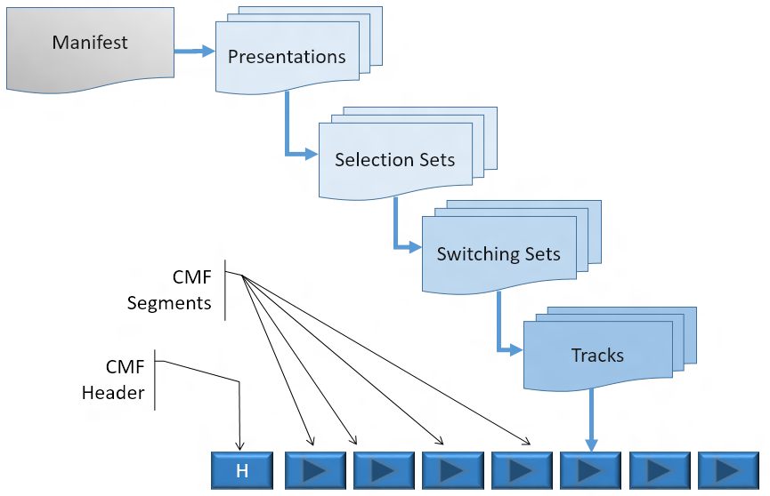
Figure 1 - CMAF Media Object Model
CMAF Tracks are encoded as a CMAF Header followed by time-sequential Fragments containing media samples and their metadata. Independently decodable Fragments improve interoperability by allowing media decoding systems to render continuous media streams regardless of the delivery method or adaptive switching between Tracks in a Switching Set.
One or more complete Fragments in sequence are contained in a Segment. A Segment is usually identified by a URL that can be used to reference it by servers, CDNs, and Manifests. The ability of many Presentations, Manifests, and CDN edge caches to refer to the same CMAF Segment by the same URI greatly improves Internet streaming efficiency.
For low latency delivery of Fragments, the samples of a Fragment can be delivered as they are encoded, in short duration Low Latency Decodable Chunks, each with a metadata header to enable parsing and decoding. Chunk support is optional for servers and players. The same samples are available later as a Segment, after the Segment is fully encoded.
CMAF Fragments are ISO Base Media movie fragments conforming to the CMAF specification, and are the primary media objects encoded and decoded. CMAF Fragments enable live encoding, adaptive streaming, and late binding by segmenting the media by time and type. Fragments are logically or physically combined into CMAF Tracks that start with a CMAF Header. Each Fragment contains a Track Fragment Decode Time Box (‘tfdt’) that determines its sequence within a CMAF Track.
CMAF Fragment constraints and relationships are specified in CMAF as Tracks. Tracks can conform to Switching Sets and Selection Sets that are synchronized in a Presentation. A Presentation can be described by one or more Manifests. A CMAF Segment is a resource consisting of one or more consecutive and complete CMAF Fragments. See section 2 of [RFC7231] for the definition and identification of a resource.
Each CMAF Segment is normally identified with a URI in Manifests, in some cases including a byte range.
CMAF Fragments and the Segments that contain them are additionally constrained in order to conform to a Track, Switching Set, Selection Set, and Presentation; as specified in those sections below.
One or more CMAF Fragments is contained in a CMAF Segment, which is then typically identified by URI used by servers and Manifests to describe a CMAF Presentation.
CMAF video Fragment durations are typically 2-6 seconds for coding efficiency, and CMAF Segment durations are typically not greater than 10-12 seconds to reduce delivery latency and bitrate rate adaptation response time. Subtitle Segment durations are usually similar to video Segment durations in live Presentations to avoid increasing video delay. A single Subtitle CMAF Segment in a prerecorded Presentation can have a duration up to the duration of the Track that contains it.
See Sections 7 through 11 for additional details on the construction of CMAF Fragments and CMAF Tracks of different media types.
Low Latency Decodable Chunks are resources used to deliver media samples before they can be packaged in CMAF Segments during live encoding and streaming.
Low Latency Decodable Chunks are typically only available until a CMAF Segment containing all of the same samples becomes available, whereas CMAF Segments are typically available for longer periods.
Origin servers that package Low Latency Delivery Packages are expected to assign them a short time-to-live for efficient use of content delivery network caches.
Example of Low Latency Delivery Package use:
A four second Coded Video Sequence in a CMAF Segment requires at least four seconds after encoder output of the first video sample before the CMAF Segment can be packaged for streaming. The same samples could be packaged for streaming in a half-second when sequentially packaged as eight Low Latency Delivery Packages of half-second duration.
Streaming protocols that enable server “push”, such as HTTP/2, broadcast, multicast, etc. can deliver multiple Low Latency Delivery Packages in response to a single request as soon as they are available; thus reducing streaming delay to roughly one second, plus any additional buffering that may be required for bitrate adaptation, network jitter, etc.
A CMAF Track is a continuous sequence of CMAF Segments in presentation time order preceded by a CMAF Header. The CMAF Header contains a Movie Box (‘moov’) sufficient to process and present all CMAF Segments in the CMAF Track.
A CMAF Track File is a complete CMAF Track stored in a single ISOM BMFF file. The CMAF Track File starts with a CMAF Header followed by a continuous sequence of CMAF Fragments in decode order, and the first CMAF Fragment has a BaseMediaDecodeTime of zero.
CMAF Segments may be identified by the file URI and a byte range. CMAF Segment byte ranges may be listed in a manifest for determined from a delivery format defined method, such as download of a Segment Index Box (‘sidx’), that is out of scope of CMAF.
A CMAF Switching Set is a collection of CMAF Tracks, where each Track is a different encoding of the same source content. Switching Sets are constrained to simplify switching between Tracks by simply sequencing their CMAF Segments during playback to adapt to network and other environmental conditions. Switching Set constraints also minimize visible discontinuities when CMAF Tracks are switched.
The description of CMAF Switching Sets and the CMAF Tracks they contain in a Manifest is out of scope of the CMAF specification, but Manifests are expected to contain enough CMAF Track and Segment information to enable automatic adaptive selection by Players.
Adaptively delivered CMAF Track is a timed sequence of CMAF Headers and Fragments selected from multiple CMAF Tracks in a Switching Set. Typical ISOBMFF file parsers and decoders can decode the concatenated sequence of CMAF Fragments the same as a fragmented movie file, with the possible exception of needing to re-initialize the decoder at switch points, as though switching unrelated tracks in a multitrack file ISO Media file.
An adaptive streaming Player typically “switches Tracks”, i.e. selects the next CMAF Segment from a different CMAF Track in the Switching Set, to adapt to the current throughput of the network and maintain a safe level in the Player’s buffers that will prevent an interruption in the presentation.
The encoding constraints of the CMAF Tracks in a Switching Set determine if the Adaptively Switched Track requires re-initialization at adaptive switch points.
If a Switching Set is encoded with bitstream switching constraints, a continuous sequence of CMAF Fragments may be delivered and decoded.
If a Switching Set is not encoded with bitstream switching constraints, a CMAF Header must be processed prior to each sequence of CMAF Fragments from that CMAF Track.
Processing the CMAF Header causes re-initialization of the parsing, decoding, decryption, and display parameters contained in the CMAF Header. This can be similar to switching files if all parameters are reset, in which case it might not be seamless. Players can minimize the impact by comparing parameters and only changing configurations that need to be changed, e.g. the video decoder need not be reconfigured for a lower profile or level. Decoding and video scaling parameters in the CMAF Header must be set before decoding and rendering the CMAF video Fragments from that non-bitstream switchable Switching Set. See section [7.3.8] for details on CMAF Switching Sets.
The normative behavior of video decoders is well-specified, but display processing is considered out of scope, i.e. conversion of YCbCr 4:2:0 subsamples from the decoder to some number of pixels in a colorspace appropriate for a particular display. Adaptive display processors require unspecified but typical behavior to scale different video spatial sampling used to encode different CMAF Fragments to the same display size and position. CMAF Tracks in a Switching Set are constrained to subsample, frame, and crop the source video so it can be rescaled with precise registration to make switching as seamless as possible. The constraints specified for CMAF Tracks and Switching Sets determine the behavior required by display processors, but display processing and other Player requirements are not directly specified by CMAF.
CMAF video Tracks require re-initialization if they store any video decoding parameter sets only in the CMAF Header (e.g. ‘avc1’ and ‘hvc1’ sample entries and video sample formats).
Video CMAF Fragments from the same Switching Set, encoded with parameter sets in each CMAF Fragment (e.g. ‘avc3’ and ‘hev1’ sample entries and video sample formats) can be decoded without re-initialization, the same as a CMAF Track that is not switched.
A CMAF Selection Set is a set of CMAF Switching Sets, where each Switching Set encodes an alternative aspect of the same program over the same time period – for example, different audio languages, video camera angles, video formats, or codecs.
CMAF Players are expected to automatically select one Switching Set from each Selection Set at the start of playback based on Player compatibility and user preferences. Users or playback applications may switch between Switching Sets in a Selection Set during playback, but seamless presentation is not expected, either because the content differs (e.g. language or camera), or because CMAF Segment time alignment and decoding are not constrained to decode seamlessly. The process of selecting independently stored CMAF Tracks for synchronized presentation is called “late binding”. Late binding allows CMAF Tracks to be encoded once and used in many different combinations. Late binding is much more efficient than “early binding” each combination of audio, video, subtitles, advertising, etc. packaged in a multiplexed track has to be separately identified and stored, duplicating much of the same information in different combinations, resulting in higher storage costs and less efficient CDN caching.
Typically, only one Track from each Selection Set is presented at a time. Multiple audio and video Selection Sets can be combined in a CMAF Presentation, using multiple decoders, for instance to mix a separate audio dialog Tracks with a Track containing music and effects, or present one video Selection Set on top of another as “picture in picture”.
The description of Selection Sets in a Manifest is not specified by the CMAF specification, however each Manifest format is expected to provide sufficient information to enable Players to automatically select optimal CMAF Track Switching Sets from CMAF Selection Sets.
A CMAF Presentation is a group of one or more synchronized Selection Sets that are intended for simultaneous presentation. There is typically one Selection Set for each media type (audio, video, or subtitles), which may contain only one Switching Set if no alternative content is available.
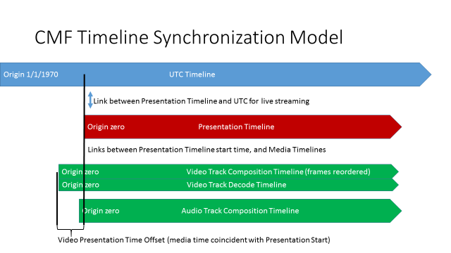A CMAF Presentation may contain more than one Selection Set of a particular media type to indicate that one CMAF Track from each Selection Set SHOULD be presented at the same time. For instance, separate Selection Sets for audio background sound and audio dialog would indicated one of each type are intended to be decoded and mixed for in a Presentation. Similarly, separate video Selection Sets could be used to indicate two video Tracks that are intended to be decoded and presented simultaneously as picture in picture, or picture on picture, etc.
Note that ISO Base Media video tracks have both a decode timeline and a composition timeline.
There are multiple timelines involved in synchronizing a CMAF Presentation. Each timeline has a timescale in units per second, and an origin where the measure equals zero.
Track decode time
Track composition time
Movie or Presentation time
UTC time, either at the time of encoding, or at the time of playback (this timeline may not be relevant for VOD Presentations)
CMAF abstracts the timing model of ISO Media files to apply to late binding, live presentations, and the reuse of CMAF Segments in multiple CMAF Presentations.
The ISO Media decode timeline is defined by the decode time and duration of each sample in a track. The accumulated decode time is the sum of all previous sample durations in that track in their stored order. The first sample in each track in an ISO Media file has a decode time of zero.
In the case of CMAF Tracks, the first Fragment may have a non-zero baseMediaDecodeTime in the Track Fragment Decode Time Box (‘tfdt’), but baseMediaDecodeTime values equals the sum of prior samples’ decode durations added to the Track’s first Fragment baseMediaDecodeTime value for the duration of the CMAF Track. Decode time is considered continuous in each track in order to maintain synchronization between tracks on a common timeline.
In the case of an ISO Media file, multiple tracks are synchronized to a movie timeline that starts at time zero by definition, and the first sample of each track is also defined to start at decode time zero. An edit list in each track can offset the decode time relative to the movie time in the event that presentation should not start with the first recorded sample, or that sample is not synchronized with the start time of the other tracks aligned to movie time zero.
Video tracks in ISO Media also have a composition timeline created by sample reordering in the video codec that changes the composition sequence and can add a composition delay to the track relative to the decode timeline (typically a few sample durations, depending on picture removal delay from the video decoder).
In the case of CMAF, video tracks use negative composition offsets where necessary to remove composition delay, so that the presentation time of CMAF Fragments is equal to their decode time; thus removing that distinction and allowing the baseMediaDecodeTime in the Track Fragment Decode Time Box (‘tfdt’) to be used as CMAF Track and Fragment presentation time. Because CMAF Fragments contain complete coded video sequences (usually one), sample reordering happens within the CMAF Fragment duration and does not change the first or last sample presentation time. If alternative CMAF Tracks in a CMAF Switching Set have different picture removal delays due to different encoded picture size and number of reference frames used, it will not result in different composition delays between CMAF Tracks.
A CMAF Presentation has a presentation timeline similar to the movie timeline of a file. It will typically need to specify the non-zero decode time of each Switching Set at zero on the Manifest’s presentation timeline. The Manifest can also link presentation time zero to a specified UTC time to indicate the earliest availability of CMAF Segments that are being encoded or made available in realtime.
During random access and “trick play” (fast forward, reverse, slow motion, etc.), the Track Fragment Decode Time Box can be used to calculate the CMAF presentation time from the CMAF Track time by applying the presentation time offset in reverse. Discontinuities in CMAF Track timelines are considered a new CMAF Track in a new CMAF Presentation that must specify the CMAF Track’s decode time at the start of the CMAF Presentation (similar to a DASH Period).
Although CMAF does not define the form or the content of the Manifest, it does define its role. A Manifest is a document that describes one or more CMAF Presentations; e.g. the MPEG DASH MPD.
A Manifest provides the Player with enough information to select, initialize, and synchronize the CMAF Track(s) to be played, and identify CMAF Headers and Segments, and possibly download them synchronously. CMAF Tracks and Fragments contain sufficient information to enable decryption, decoding, synchronization, and rendering once CMAF Fragments are located in CMAF Segments. A Manifest can also provide information on delivery protocol, network management, authorization, license acquisition, etc. in addition to Segment identification and Presentation description, but those are optional for the hypothetical presentation model.
A CMAF Manifest is responsible for describing the combination and synchronization of independently encoded CMAF Switching Sets grouped in Selection Set to form a synchronized multimedia presentation. A common presentation timeline, similar to an ISO Media movie timeline, can be used to synchronize the timestamps of each CMAF Track so that a CMAF Player can “late bind” selected audio, video, and subtitles. In cases where there are multiple CMAF Tracks in a Switching Set, a CMAF Player can seamlessly switch between CMAF Tracks to optimize for the network bandwidth and device capability.
Presentation Manifests are expected to include any recorded audio offset edit list duration in Manifest synchronization information so that audio Switching Set synchronization is precisely described relative to video to the accuracy of the media timescales. A Manifest may specify a presentation start time referencing wall clock time, e.g. UTC time; typically for a live Presentation.
A Manifest may specify a growing Presentation duration for each Selection Set and its contained Switching Sets and Tracks during live encoding and playback.
A Manifest may remove earlier Segments from a Presentation. A Manifest may specify an availability start and end time (in wall clock time) for an entire Presentation.
Manifests and Compositions of Manifests may include additional information to indicate different start and end times within the CMAF Presentation to begin and end media playback.
Player implementers should note that CMAF provides the following affordances:
A CMAF Segment is well-suited to network transfer because it is a compact, self-contained set of media samples that covers a single, short period of time, and can be sequenced with other CMAF Segments in a single track parser/decoder and browser media source buffer without additional bitstream splicing and editing.
Each CMAF Segment contains a media timestamp in the form of BaseMediaDecodeTime in the Track Fragment Decode Time Box (‘tfdt’), which allows individual CMAF Segments and CMAF Tracks that start with arbitrary timestamps to be synchronized to a presentation timeline
The movie fragment box (‘moof') and the sample data contain everything necessary to render the samples at the correct place on the playback timeline after a Track has been initialized with a CMAF Header.
CMAF Tracks can be separately selected and delivered by a player, then synchronized at presentation time, thus allowing each player to customize the presentation for the device, network, and user.
The IDR picture at the start of each video CMAF Segment can be obtained with minimal transfer activity for fast forward or fast reverse streaming.
Selection Sets and single track CMAF Segments allow alternative content to be offered for playback without requiring the Player to transfer content that it does not intend to play.
Switching Sets allows alternative bitrate and resolution encodings of the same content to be seamlessly presented through a single video decoder.
The use of Common Encryption supports access to the same content by multiple decryption key delivery systems.
The 'emsg' box allows Segments to signal application-defined Track events with low latency during live presentations without requiring frequent Manifest downloads.
In order to play an adaptive streaming Presentation, a Player typically:
parses the Manifest and selects Selection Sets of media types it can present on that device (e.g. audio only, or audio/video/subtitles/Picture in Picture, etc.).
compares Switching Set information to Player, decoder, display, DRM, etc. capabilities to determine the compatible Switching Sets in those Selection Sets it can play.
selects the most preferred and compatible Switching Set in each Selection Set, sometimes based on stored user preferences (language, accessibility, rating, stereo or multichannel audio, etc.).
selects an initial Track from each selected Switching Set, usually based on estimated network bandwidth, rapid start heuristics, display size, etc.
initializes, decodes, synchronizes, and presents the selected Tracks, and automatically requests each CMAF Segment in sequence from that Switching Set, adapting requested bitrates to maintain continuous playback within the limitations of network throughput.
Live Presentation playback is typically optimized for low latency, so a player only buffers a few seconds of each selected CMAF Track in the player to minimize presentation delay. A different bitrate could be selected for each CMAF Segment requested from a Switching Set in order to prevent buffer underflow in the player while maximizing media quality. Once a live presentation delay and buffer duration is selected, the delay can’t be changed without halting playback and rebuffering, or decoding at a speed faster or slower than normal, which is usually not acceptable. Measurements of network latency, jitter, throughput rate, throughput variation, Segment duration variation, and server/client clock synchronization can help a player select an optimal presentation delay and next Segment bitrates to request. To minimize visible changes between CMAF Segments encoded at different bitrates, live CMAF Switching Sets may include more Tracks with smaller bitrate differences, for instance an increase of 30% to the next highest bitrate Track.
Recorded (video on demand) Presentation playback is typically optimized for infrequent switching and infrequent rebuffering. Players can accumulate several minutes of buffer time during playback by selecting lower bitrate Segments that can be downloaded faster than they are decoded. Once sufficient buffer time has accumulated; an optimum bitrate can be selected. Tracks may be rarely switched because the long player buffer duration averages short term changes in network throughput. Because bitrate changes are less frequent and therefore less noticeable, fewer Tracks with larger bitrate differences may be considered acceptable in order to reduce encoding and storage, for instance an increase of 50% to the next highest bitrate Track.
When Players adaptively switch CMAF video Tracks, they typically rescale the decoded and cropped image to the Player selected display aperture. Alternative Tracks in a Switching Set are typically encoded at lower resolutions (subsampled) in proportion to their bitrate. If video samples are stored in ‘avc1’ or ‘hvc1’ format, a CMAF Header must be processed before the first CMAF Segment from a new Track to reinitialize the decoder with the correct decoding parameters for that Track. If video samples are stored in ‘avc3’ or ‘hev1’ format, reinitialization is not required because each CMAF Fragment contains the necessary decoding parameters in the first video sample.
See Appendix B for recommendations on encoding adaptive Switching Sets.
The Common Media Application Format Container is derived from the ISO Base Media File Format, and is primarily a profile of that format.
The CMAF container file type brand is ‘cmfc’. The requirements of this brand include the requirements of the brand ‘iso9’ [ISOM]. It also includes boxes specified in Common Encryption [CENC], [DASH], MPEG-4 Part 15 for storage of NAL Structure video [ISOVIDEO], and those boxes defined by referenced audio specifications, as defined in .
The brand ‘cmfc’ SHALL be listed in compatible_brands. The brand ‘iso9’ SHALL be listed in compatible_brands. If ‘cmfc’ is the major_brand, the minor_version SHALL be 0.
Note: File readers should read possible future versions of CMAF that increment the minor_version number.
A CMAF Track SHALL also contain a CMAF Media Profile brand specified in Annex A.
A CMAF Compatible Track MAY also include the ‘cmfc’ container brand if it contains an externally specified Media Profile brand that conforms to container, Track, and media requirements as specified in Annex B.
If ‘cmfc’ is the major_brand, file names SHOULD use the file extension “*.cmff”, and use the Internet Media Type (MIME type) registered for that extension. If ‘iso9’ or another brand is the major_brand, then file names SHOULD use the file extension and Internet Media Type specified for that brand, e.g. *.mp4, *.3gp, *.uvu, etc.
CMAF Segments MAY be identified by the ISO Media segment-type brand ‘cmfs’ with the minor_version 0.
The primary constraints of the ‘cmfc’ file type brand are described in Sections 7.3.4 and 7.3.5.
The media samples contained in CMAF Segments can also be packaged and delivered in smaller Low Latency Decodable Chunks. See Section 7.3.7.
Additional container constraints are specified in this Section and in Sections 7 through 11 and Annex A. that define audio, video, and subtitle Track formats and Track Profiles, and encryption of audio and video media data. Additional container and Track constraints are specified for Tracks included in Track Selection Sets (see 6.1.7) and Track Switching Sets (see 6.1.6).
Each Track has a CMAF Header associated with it, although the CMAF Header and CMAF Segments might not be stored as an ISO Media file, if they are stored at all.
The Common Media Application Format Container brand ‘cmfc’ SHALL include the following boxes with nesting, optionality, and cardinality specified in the following table. Other boxes MAY be included. Boxes not specified here directly or by reference MAY be ignored.
Table 1 - Common Media Application Format brand ‘cmfc’ boxes
| NL 0 | NL 1 | NL 2 | NL 3 | NL 4 | NL 5 | Format Req. | Specification | Description |
|---|---|---|---|---|---|---|---|---|
| ftyp | 1 | Section 7.5.1 | File Type and Compatibility | |||||
| moov | 1 | [ISOM] 8.2.1 | Container for functional metadata | |||||
| mvhd | 1 | [ISOM] 8.2.2 | Movie header | |||||
| trak | + | [ISOM] 8.3.1 | Container for each track | |||||
| tkhd | 1 | [ISOM] 8.3.2 | Track header | |||||
| edts | 0/1 | [ISOM] 8.6.5 | Edit Box | |||||
| elst | 0/1 | [ISOM] 8.6.6 | Edit List Box | |||||
| mdia | 1 | [ISOM] 8.4 | Track Media Information | |||||
| mdhd | 1 | Section 7.5.7 | Media Header | |||||
| hdlr | 1 | [ISOM] 8.4.3 | Declares the media handler type | |||||
| minf | 1 | [ISOM] 8.4.4 | Media Information container | |||||
| vmhd | 0/1 | Section 7.5.8 | Video Media Header | |||||
| smhd | 0/1 | Section 7.5.9 | Sound Media Header | |||||
| sthd | 0/1 | [ISOM] 12.6.2 | Subtitle Media Header | |||||
| dinf | 1 | [ISOM] 8.7.1 | Data Information Box | |||||
| dref | 1 | Section 7.5.10 | Data Reference Box, declares source of media data in track | |||||
| stbl | 1 | [ISOM] 8.5 | Sample Table Box, container for the time/space map | |||||
| stsd | 1 | Section 7.5.11 | Sample Descriptions (See Table 2‑2 for additional detail.) |
|||||
| stts | 1 | Section 7.5.13 | Decoding, Time to Sample | |||||
| stsc | 1 | Section 7.5.13 | Sample-to-Chunk | |||||
| stsz / stz2 |
1 | Section 7.5.13 | Sample Size Box | |||||
| stco | 1 | Section 7.5.13 | Chunk Offset | |||||
| elng | 0/1 | [ISOM] 8.4.6 | Extended Language Tag | |||||
| sgpd | * | 7.5.19 | Sample Group Description Box | |||||
| udta | 0/1 | [ISOM] 8.10.1 | User Data Box | |||||
| cprt | + | [ISOM] 8.10.2 | Copyright Box | |||||
| kind | + | [ISOM] 8..10.4 | Track Kind Box | |||||
| mvex | 1 | [ISOM] 8.8.1 | Movie Extends Box | |||||
| mehd | 0/1 | [ISOM] 8.8.2 | Movie Extends Header | |||||
| trex | + (1 per track) |
Section 7.5.15 | Track Extends Box | |||||
| pssh | * | [CENC] 8.1 | Protection System Specific Header Box | |||||
| styp | [ISOM] 8.16.2 | Segment Type | ||||||
| prft | [ISOM] 8.16.5 | Producer Reference Time | ||||||
| emsg | Section 7.4.2 | Event Message | ||||||
| moof | + | [ISOM] 8.8.4 | Movie Fragment | |||||
| mfhd | 1 | Section 0 | Movie Fragment Header | |||||
| traf | 1 | [ISOM] 8.8.6 | Track Fragment | |||||
| tfhd | 1 | Section - | Track Fragment Header | |||||
| tfdt | 1 | [ISOM] 8.8.12 | Track Fragment Base Media Decode Time | |||||
| trun | 1 | Section 7.5.18 | Track Fragment Run Box | |||||
| senc | 0/1 | [CENC] | Sample Encryption Box | |||||
| saio | * see note 1 | [ISOM] 8.7.13 | Sample Auxiliary Information Offsets Box | |||||
| saiz | * see note 1 | [ISOM] 8.7.12 | Sample Auxiliary Information Sizes Box | |||||
| sbgp | * | [ISOM] 8.9.2 | Sample to Group Box | |||||
| sgpd | * | [ISOM] 8.9.3 | Sample Group Description Box | |||||
| mdat | + | Section 7.5.19 | Media Data container for media samples |
Format Req.: indicates the number of boxes required to be present in the container, where ‘*’ means “zero or more” and ‘+’ means “one or more”. A value of "0/1" indicates only that a box may be present, but it may also be conditionally required as specified in the CMAF format or a specific Profile.
Note 1: The Sample Auxiliary Information Box (‘saio’) and Sample Auxiliary Size Box (‘saiz’) are conditionally required for encrypted content as specified in section 8.7.12 of [CENC].
Table 2 is a continuation of Table 1 showing nesting levels 5 to 8 separately to reduce table width.
Table 2 – CMAF Protected Sample Entry Box structure
| NL 5 | NL 6 | NL 7 | NL 8 | Format Req. | Source | Description |
|---|---|---|---|---|---|---|
| stsd | 1 | Section 7.5.11 | Sample Description Box | |||
| sinf | * | [ISOM] 8.12.1 | Protection Scheme Information Box | |||
| frma | 1 | [ISOM] 8.12.2 | Original Format Box | |||
| schm | 1 | [ISOM] 8.12.5 | Scheme Type Box | |||
| schi | 1 | [ISOM] 8.12.6 | Scheme Information Box | |||
| tenc | 1 | [CENC] 8.2 | Track Encryption Box |
The structure of a CMAF container is specified as a file, although it may only exist as a stream of Segments that never persist as a complete file. The following structure applies to a file that may represent the accumulation of a stream that is encoded over time, a file that is progressively downloaded over time, or a stored file. Additional constraints may be required to conform to a particular Media Profile and Application Profile defined in this specification.
Figure 2 illustrates a CMAF Header, consisting of a sequence of required or optional boxes (optional boxes indicated by dotted lines).
The CMAF Header defines the set of boxes that appear at the beginning of a CMAF Container and their sequence, as shown in Figure 2. The CMAF Header is defined to extend from the first byte of the container up to but not including the first byte of the first CMAF Segment. These boxes are defined in compliance with [ISOM] with the following additional constraints and requirements:
The CMAF Header SHALL start with a File Type Box (‘ftyp’), as defined in Section7.5.1.
The CMAF Header shall include one Movie Box (‘moov’).
The Movie Box shall start with a Movie Header Box (‘mvhd’), as defined in Section 7.5.2.
The Movie Box shall contain one or more media tracks as specified in Section7.3.4, which defines the Track Box (‘trak’) requirements for the Common Media Format.
Media Samples SHALL NOT be referenced by the Track Box (‘trak’) in a CMAF Header. Therefore, the duration field value in the Movie and Track Header Boxes is zero, since it stores the duration of the Track Box, not the Movie Fragments Boxes.
The Movie Box shall contain a Movie Extends Box (‘mvex’), as defined in Section 8.8.1 of [ISOM], to indicate that the container contains Movie Fragment Boxes.
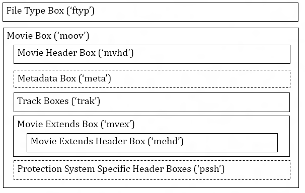CMAF Header Box Sequence and Structure" />
Figure 2 – (Informational) CMAF Header box sequence and structure
The Movie Extends Box (‘mvex’) MAY contain a Movie Extends Header Box (‘mehd’), as defined in [ISOM] Section 8.8.2, and if so SHALL provide the overall duration of a fragmented movie. If the duration is unknown, this box SHALL be omitted.
The Movie Box (‘moov’) MAY contain a Free Space Box (‘free’), for example to reserve space to later overwrite metadata or DRM-specific boxes, without changing file size or byte offsets. If present in the CMAF file, the Free Space Box (‘free’) SHALL be the last box in the Movie Box (‘moov’).
In streaming applications, including live encoding, just-in-time packaging of pre-encoded elementary streams, and streaming of pre-encoded files, the CMAF File Header corresponds to the Initialization Segment specified in DASH streaming profiles defined for ISO Media.
A CMAF Track is a CMAF Header followed by a timed sequence of CMAF Fragments that form a byte sequence equivalent to a single track ISO Media File, or a portion of a hypothetical file, i.e. the first movie fragment MAY begin with a non-zero baseMediaDecodeTime. The first CMAF Fragment in a CMAF Track MAY be non-zero because only a subset of a file’s movie fragments are included in the CMAF Track, or because Track Fragment Decode Time Box (‘tfdt’) baseMediaDecodeTime used a timeline origin such as UTC (1/1/1900) or Unix Epoch (1/1/1970) when it was encoded.
A CMAF Track SHALL consist of a continuous sequence of CMAF Fragments encoded from the same media source stream and media type ordered by presentation time, as well as a CMAF Header sufficient to initialize and process those CMAF Fragments.
A CMAF Compatible Track MAY contain timed metadata, but SHALL be contained in a separate metadata Selection Set, not a second track in CMAF audio or video Fragments.
Media samples in successive Fragments of a Track SHALL be continuous in decoding time.
The first CMAF Fragment in a CMAF Track MAY start at a non-zero baseMediaDecodeTime.
Subsequent CMAF Fragments in a CMAF Track SHALL have baseMediaDecodeTime equal to the sum of all prior CMAF Fragment durations added to the first Fragment’s BaseMediaDecodeTime.
Sequence_number in ‘mfhd’ is ignored, and is not required to be unique within CMAF Track or increase with decode time.
Each CMAF Fragment in a CMAF Track SHOULD have a duration of at least one second, with the possible exception of the first and last Fragments of the Track, to avoid the need for very short CMAF Segments and request scheduling.
Note: Valid CMAF Tracks do not have media time discontinuities resulting from missing samples or Fragments. Gaps in decode time would result in audio video synchronization errors because the ISO Base Media File Format calculates decode and presentation times as the sum of prior sample durations in a track. If audio or video frames are unavailable during recording, recorded samples may be extended in duration or filled with media data such as silent audio or repeated pictures. Long gaps and gaps synchronized across all media streams can be recorded as two sequential, but non-continuous CMAF Tracks or Presentations that can be sequenced by a Manifest. A Manifest can sequence Tracks on a presentation timeline to remove a time gap, or maintain a presentation gap between two Tracks so they remain in sync with other Tracks. Player handling of delivery errors that result in invalid CMAF Fragment sequences is out of scope of CMAF, but the Track Fragment Decode Time Box (‘tfdt’) in each Fragment enables synchronization to Manifest presentation time following a gap in media delivery, trick play, etc.
Tracks begin with a CMAF Header, and samples are stored in CMAF Fragments that each contain a single Track Fragment that references a complete sample sequence stored in a Media Data Box (‘mdat’) that immediately follows each Movie Fragment box in delivery/storage order.
Each Track contains a Track Box (‘trak’) in accordance with [ISOM], with the following constraints:
Track Boxes (‘trak’) SHALL NOT reference media samples.
Only audio Track Boxes MAY contain an Edit Box (‘edts’) that SHALL contain one Edit List Box (‘elst’).
If an Edit List Box (`elst’) is included in a CMAF audio Track, the value of entry_count SHALL be 1, and all fields shall be set to the values specified in Section [7.5.14].
Each CMAF Fragment is an ISO Base Media segment [ISOM, section 8.16] that contains one Movie Fragment Box (‘moof') followed by one or more Media Data Boxes ('mdat'). These SHALL be packaged and encoded conformant to the following constraints:
A CMAF Fragment SHALL contain a single Movie Fragment Box (‘moof’).
A CMAF Fragment SHALL contain one or more Media Data Box ('mdat').
The Movie Fragment Box (‘moof’) SHALL contain a single Movie Fragment Header Box (‘mfhd’). See Section 0 for more detail.
The Movie Fragment Box (‘moof’) SHALL contain a single Track Fragment Box (‘traf’) and media type (e.g. audio, video or subtitle).
Note that video with caption data embedded in the elementary stream (e.g. CEA 608 in SEI NALs) is identified as a single CMAF Track of video media type, but the presence of SEI caption data is indicated by an additional sample description with the sample entry ‘csei’.
The Track Fragment Box (‘traf’) SHALL contain one Track Fragment Decode Time Box (‘tfdt’) that indicates both the earliest sample presentation time in the Fragment and the earliest sample decode time (stored in the baseMediaDecodeTime field).
The Track Fragment Box (‘traf’) SHALL contain one Track Run Box (‘trun’) that relies on default values stored within the CMAF Fragment, or that are constant for all CMAF Fragments in the same CMAF Switching Set (e.g. default_sample_duration or dependency flags in Track Extends Box (‘trex’) in the CMAF Headers).
A CMAF Fragment SHALL contain all media samples necessary to render the duration of the track fragment box, and no others.
All media samples in a CMAF Fragment SHALL be addressed by byte offsets in the Track Run Box (‘trun’) that are relative to the first byte of the Movie Fragment Box (‘moof’). (see [ISOM] Section 8.8.4).
All samples in a CMAF Fragment SHALL be decodable without reference to samples outside the CMAF Fragment, with the exception of initial audio samples that may be necessary to prime a predictive audio codec.
All video CMAF Fragments SHALL contain only complete Coded Video Sequences delimited by SAP type 1 or 2.
All video CMAF Fragments SHALL contain a v1 Track Run Box (‘trun’) with composition offsets (negative composition offsets where necessary) to adjust the earliest sample presentation time to equal the earliest sample decode time stored in the baseMediaDecodeTime field of the Track Fragment Decode Time Box (‘tfdt’).
CMAF Fragments containing encrypted samples SHALL conform to the constraints in Section 8.
Each CMAF Fragment, in association with its associated CMAF Header, SHALL contain sufficient metadata to be decoded, decrypted, and displayed when it is independently accessed.
Note: For instance, if sample groups and sample group descriptions are used to signal optional features, such as encryption key changes, then a Sample Group Description Box (‘sgpd’), and Sample to Group Box (‘sbgp’) that reference that description has to be present in each in each Track Fragment Box (‘traf’).
The CMAF Fragment MAY prepend one or more Event Message Boxes (‘emsg’). See Section 7.4.3.
Note: Each Event Message Box (‘emsg’) contains a schemeIdUri that functions as a URN message scheme identifier, and defines the payload of the message. Some schemes such as urn:scte:scte35 are standardized by SDOs and consortia for interoperability, in this case, ad and program segmentation splicing and signaling. But, any application provider can define its own scheme using a URL they control, and may locate a specification at that URL if they choose. Possible uses include delivering sports scores, interactive components, presentation chaining, server redirection, sparse content description metadata, etc. Delivering a simple URL allows a server to decide what to download (if anything) based on the player, device, location, time of the request, etc. If a player has a handler for the scheme, that is the only component that needs to understand the payload and protocol. Message parsing and routing is generic.
Figure 3 illustrates the box sequence and containment of a CMAF Fragment.
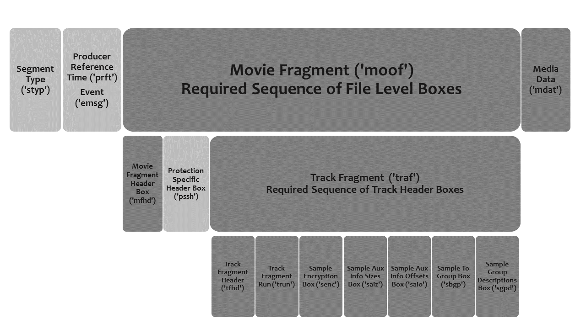CMAF Fragment Box Sequence and Containment"/>
Figure 3 – (Informational) CMAF Fragment box sequence and containment
NOTE Bottom row indicate containment in the ‘traf’ box above. The sequence is only recommended. The presence of the Protection Specific Header Box in the Movie Fragment is optional, and typically only used for the delivery of chained licenses or “key rotation”. The Producer Reference Time Box (‘prft’), Segment Type Box (‘styp’), and Event Message Box (‘emsg’) are optional.
Each CMAF Segment SHALL include one or more complete CMAF Fragments.
Each CMAF Segment SHALL have a single unique URI by which it can be addressed by servers, CDNs, and Manifests.
Note: use of the URI is strongly recommended so that the content is shared in caches and content distribution systems even when different manifests or delivery protocols are used.
If a CMAF Track is stored as a CMAF Track File, CMAF Segment URIs MAY be a file URL with a byte range appended to each CMAF Segment request.
Note: A URL response containing one or more CMAF Fragments is defined as a CMAF Segment regardless of the addressing method (i.e. not called a subsegment File byte range URLs can request an arbitrary range of CMAF Fragments, so byte range Segments are not typically cached at CDNs, rather each byte range request is extracted from a CMAF Track File that is cached near the edge servers. With CMAF Player buffers multiple minutes in duration and stable network conditions, long duration Segments, e.g. 1 minute, can be progressively delivered with high efficiency. However, Track Switching is inefficient when long duration requests have to be cancelled before completion.
CMAF Segments MAY be combined for delivery efficiency, error correction, or other reasons, but SHALL be made accessible to CMAF Players that request the CMAF Segment URI so the Segments can be late bound and synchronized as described in the CMAF Manifest.
A CMAF Segment SHALL be made available to a CMAF Player independent of the delivery system when a CMAF Segment is requested by URI. For example, CMAF Segments can be delivered over broadcast or multicast, while the same or different CMAF Segments can be delivered over unicast, but the CMAF Player can identify any CMAF Segment by URI and schedule it for playback regardless of which network path delivered it.
A server may offer Low Latency Delivery Chunks earlier than the equivalent Segment can be encoded, packaged, and delivered. When CMAF Low Latency Delivery Chunks are offered, complete CMAF Segments SHALL also be offered at their normal availability time.
A Low Latency Delivery Chunk is a segment related to a CMAF Segment by the following constraints:
A Low Latency Delivery Chunk -
SHALL contain only one CMAF Fragment with one Media Data Box (‘mdat’).
SHALL contain a sequential subset of the media samples of a related CMAF Fragment in decode order.
Note: Each Package will be a subset of the samples of a CVS.
SHALL indicate the BaseMediaDecodeTime of the first stored sample and composition offsets equal to the related CMAF Fragment.
SHALL increment sequence_number of each Movie Fragment Box (‘moof’) by +1, starting with the sequence_number of the CMAF Fragment containing the same media samples.
Note: Low Latency Delivery Chunk sequence_number values overlap those of segments in the same Track and therefore may not be stored as a valid ISO Media track.
A complete sequence of Low Latency Delivery Chunks contains all of the Samples in the equivalent CMAF Segment in decode order, but each CMAF Low Latency Delivery Chunk contains a short time range, e.g. a half-second. Seamless Track Switching is only possible on the first Low Latency Delivery Chunk containing the first samples of the equivalent CMAF Segment.
A CMAF Switching Set SHALL contain one or more CMAF Tracks, each of which is an encoding of the same source content.
Each CMAF Switching Set SHALL contain one media type, i.e. audio or video or subtitles.
Switching Sets MAY contain multiple CMAF Tracks, and SHALL be constrained by CMAF to allow players to switch between tracks at segment boundaries and decode the resulting sequence of CMAF Fragments through a single decoder without playback disruption. Players are expected to present each video sample at the same time and quality following a Track switch as it would without any Track switch, and this is referred to as “seamless switching”. Perceptually seamless video switching depends on the amount of bitrate, resolution, and quality change between Segments, viewing conditions, and the quality of the display.
Tracks in the same CMAF Switching Set MAY vary by one or more parameters including bit rate, frame rate, and resolution. Between Tracks in a Switching Set, any two CMAF Segments with the same timestamp SHALL be encodings of the same source content.
Each Track in a Switching Set SHALL have the same CMAF Track Duration.
Each Track in a Switching Set SHALL have the same number of Segments.
CMAF Segments encoded from the same media samples in a Switching Set SHALL start at the same presentation time, as specified by the BaseMediaDecodeTime in the Track Fragment Decode Time Box (‘tfdt’).
All CMAF Tracks in a Switching Set SHALL have CMAF Headers with matching boxes and field values, except for the following fields in the Movie Header Box, Track Header Box, or visual sample entry:
The fields width, height, creation_time, and modification_time MAY differ between CMAF Headers in a Switching Set.
Visual sample entries SHALL indicate the same codingname by its four-character code.
Visual sample entries MAY indicate different codec profile, level, and constraints; and different encoded width, height, sample aspect ratio, and cropping dimensions.
Tracks MAY have different frame rates, but the number of samples per Segment and their duration SHALL differ inversely so that alternative Segments have equal duration.
Each Video Track in a Switching Set SHALL have a CMAF Header containing a Track Header Box (‘tkhd’) with normalized display width and height values, and one sample entry that describes every Sample in the Track. See Section 9 for more information on calculating normalized display width and height.
All video Segments within a Switching Set are intended to be displayed with the same height, width and position; and SHALL be encoded with the same framing, transfer function, bit depth, color subsampling, and color volume, so that switching between CMAF Tracks in a Switching Set will result in continuous appearance when the CMAF Segments are scaled to the same display aperture.
Switching Sets are defined to be “bitstream switchable” if they need to process a CMAF Header only once before the first CMAF Fragment is decoded, and can switch between CMAF Tracks in the same CMAF Switching Set without processing a CMAF Header, or “re-initializing” parsing, decoding, decryption, or display systems.
The following CMAF Track types encoded to the constraints of this document are bitstream switchable:
Audio Tracks
Video Tracks with ‘avc3’ or ‘hev1’ sample entries
Subtitle Tracks
Audio and subtitle Fragments are sync samples, and ‘avc3’ and ‘hev1’ Coded Video Sequences, as specified in CMAF, contain the necessary Sequence Parameter Set and Picture Parameter Set NAL Units to signal decoding parameters allowed to change between CMF Tracks in the same Switching Set.
The following CMF Track types are not to bitstream switchable unless explicitly signaled so (e.g. in the manifest):
Video with ‘avc1’ sample entry
Video with ‘hvc1’ sample entry
Switching Sets that are not bitstream switchable require re-initialization before decoding a sequence of CMAF Fragments from a Track by processing the CMF Header of that Track. A CMAF Header from each Track in the Switching Set need only be downloaded once (it is assumed they do not change during encoding), but must be processed every time that Track is switched to, in order to set the correct decoder configuration in the sample entry, apply the correct cropping and scaling, codec profile and level, etc. Players that process CMF Headers on each Track switch can evaluate parameter changes to minimize the amount of reconfiguration required and minimize presentation disruption.
Manifests can identify bitstream switchable Switching Sets explicitly, but if they do not, the above assumptions can be used by Players.
See also Section 9.2 and Section A.3.
All Switching Sets within a Selection Set SHALL be of the same media type, i.e. audio, video, or subtitles.
All Switching Sets within a Selection Set SHALL be of approximately the same duration, and the difference less than the maximum duration of a Coded Video Sequence.
A Selection Set may contain only one Switching Set if no alternative content is available.
Different Switching Sets that encode the same content with different codecs or video formats may be contained within a Selection Set to enable a player to preselect the most compatible codec or video format for that content, and automatically adaptively switch within the selected Switching Set
One CMAF Track SHOULD be presented from each Selection Set in a Presentation, e.g. one audio and one video Selection Set.
Note: A Subtitle Track can be selected, but not displayed by user control, but “forced” titles may be displayed even through regular subtitles are not displayed.
A CMAF Presentation SHALL contain one or more synchronized Selection Sets, each Selection Set potentially synchronizing a different media type (audio, video, or subtitles).
CMAF Tracks of different media types in a Presentation SHALL be encoded such that synchronized timestamps in the sources produce synchronized timestamps in the corresponding encoded Segments.
Each CMAF Track in a Presentation SHALL be synchronized to the same presentation start time, and have approximately the same Track duration, within a tolerance of the longest CMAF Segment Duration of any Track in a Selection Set.
An offset edit list SHOULD be recorded in a CMAF Header when encoding an audio track that contains a CMAF Fragment that overlaps the presentation time of the first video sample, in order to skip audio that precedes the first video sample during playback. See Section7.5.14.
The duration of a Presentation SHALL default to the duration of its longest Switching Set, but Manifest MAY indicate earlier termination. A Presentation MAY have a fixed duration, or a duration that grows over time as CMAF Segments are encoded or otherwise added to Tracks. This is normally the case for live Presentations.
A Sample Encryption Box (‘senc’) specified in [CENC], or equivalent, SHALL be present in each CMAF Segment that stores Sample Auxiliary Information for Common Encryption (e.g. subsample information for NAL structured video, or per-sample initialization vectors).
NOTE Common Encryption allows storage of Sample Auxiliary Information in any location, but content conformance testing and player parsing for CMAF can be optimized by using a defined location in each CMAF Segment that is easily accessible to the file parser. For instance, storage in media data or outside the CMAF Segment would result in different parsing requirements that would complicate player implementation. However, parsers must use ‘saio’ and ‘saiz’ byte offsets to locate Sample Auxiliary Information even when it is stored in ‘senc’ in order to conform to [CENC].
As specified in [CENC], a Track Encryption Box indicates that media samples in the track might be encrypted, it identifies the encryption scheme used, and contains default encryption parameters for the ISO Media track. The third edition of MPEG Common Encryption (ISO/IEC 23001-7:2016) defines version 1 ‘tenc’ with support for additional encryption schemes, such as ‘cbcs’ pattern encryption, which uses a constant IV value in ‘tenc’ that is applied to the start of every cipher block chain in the track.
The Event Message Box (‘emsg’) is specified in section 5.10.3.3 of [DASH]
One or more Event Message Boxes MAY precede the Movie Fragment Box in a CMAF Fragment.
Event Messages are used to associate sparse metadata to presentation times in the CMAF Track, such as program segments, ratings, user interface data, advertisement identification, or availability splice points where video advertisements can be inserted. Event Message Boxes do not need to be repeated, but can be repeated, e.g. at ten seconds and five seconds before the event, in order to allow players tuning into a live stream to receive at least one copy of the Event Message. Event Messages with duplicated IDs can be ignored.
An Event Message scheme can define a URL in the message_data[] section of the box intended to trigger a Player request. That allows a server to determine a response that can be different based on clock time, the Player, the device, its location, etc. To reduce CMAF Track bitrate, it is advisable to deliver a URL when the response is large, or not relevant to a significant fraction of Players. Delivering data in the Event Message Box has the advantage of low latency and avoiding additional download requests, especially for live streaming.
Because Event Messages are attached to CMAF Segments that are already being requested, e.g. for audio playback, no change is required in a Player’s normal adaptive Segment downloading behavior. Event Messages can also be duplicated in a Manifest to provide random access and Event Message history for VOD playback, or live random access within a time shift buffer. Manifest signaling also allows Players to detect Event Messages by frequently requesting updated Manifests.
Event Message Boxes can be appended during encoding or delivery without requiring reformatting of the CMAF Fragment Movie Fragment Box or Media Data Box. Event Messages can provide notification any time in advance of the event’s presentation time so a player can complete actions, such as downloading signaled information or media, e.g. a video ad. It is advisable to insert Event Message boxes on all Tracks within a Selection Set (e.g. audio) so the message will be read regardless of the Track selected.
A Manifest can notify a Player of the Event Message schemes that will be sent in a Presentation so that Player can register a handler for each scheme_id_uri that can parse and process that Event Message scheme. Schemes can be specified for private or public use, as long as the scheme_id_uri is unique for that scope, and specified and managed accordingly.
CMAF Tracks and Files SHALL include at least the compatible_brands of ‘cmfc’ and ‘iso9’.
The value of the duration field SHALL be set to zero to indicate that the Movie Box (‘moov’) contains no media samples and therefore has no duration.
NOTE The duration field in the Media Header Box (‘mdhd’) applies to the Track Box (‘trak’), which contains no media samples in CMAF. The duration of an entire fragmented movie can optionally be stored in the fragment_duration field of the Movie Extends Header Box (‘mehd’), which is equal to the sum of all track Fragment durations in the longest track in the movie. If the duration is unknown, this box is omitted.
The fields rate, volume, and matrix SHALL be set to their default values.
The CMAF Header SHOULD contain a Copyright notice stored as defined in ISO/IEC 14496-12.
Tracks that are language-specific SHOULD carry a language tag in their media header [ISOM], augmented as necessary by an Extended Language Tag [ISOM].
Other metadata, carried in either user data or metadata boxes MAY be present. When present they MUST NOT occur at file level, i.e. they must be contained in another permitted box, as permitted by ISO/IEC 14496-12.
An XML document MAY be stored as the primary item of a Metadata Box (‘meta’), and reference other objects, such as thumbnail and jacket images, stored in an Item Data Box (‘idat’) in the Metadata Box (‘meta’) using their item names in the ‘iloc’ box. The use of the XML Box (‘ xml’) is deprecated.
The Kind Box (‘kind’) MAY be used to store the role of a CMAF Track. The Kind Box (‘kind’) box is stored in the User Data Box (‘udta’) of the Track Box (‘trak’), as documented in the ISO Base Media File Format [ISOM].
Any track can be labeled with role information describing the intended purpose of the track. This information can be captured at the time of encoding, and later copied to a Manifest describing the CMAF Tracks in a Selection Set so that a user or an automatic algorithm can make an appropriate selection.
The Kind Box (‘kind’) can contain one or more tags from a variety of places, including:
the DASH specification [DASH]section 5.8.5.5, as identified by the schemeURI "urn:mpeg:dash:role:2011" (without the quotation marks);
The W3C HTML5 specification of track 'kind', as identified by the schemeURI [[TBD? https://www.w3.org/TR/html5/embedded-content-0.html#the-track-element]]
Where multiple schemes define the same concepts, the DASH scheme SHOULD be used. In particular, where captions or descriptions need to be identified, or that the text be marked as easy to read, the following values from DASH SHOULD be used:
"caption"
"description"
[[ed: "public.easy-to-read" – no matching DASH value?]]
[[ed: The easy-to-read kind is an additional annotation, indicating that the text of the captions etc. is easy-to-read, as mandated by the FCC.]]
CMAF Track Header Boxes shall conform to [ISOM] Section 8.3.1 with the following additional constraints:
The field duration SHALL be set to a value of zero (‘0’), indicating no media samples are present in the Track Box (‘trak’).
The field matrix SHALL be set to their default values as defined in [ISOM], except to indicate video orientation (i.e. portrait or landscape orientation relative to the captured scene).
The following fields SHALL be set to default values as defined in [ISOM], unless specified otherwise in this specification:
The layer field SHALL equal -1 for subtitle tracks (i.e. in front of video).
The width and height fields for a non-visual track (i.e. audio) SHALL be 0.
The width and height fields for a CMAF video track shall specify the track’s normalized presentation size as fixed-point 16.16 values expressed in square pixels after decoder cropping, and in the case of video encoded with a non-square spatial sample shape, after horizontal scaling has been applied. See Section 9.2.2 for normalized width and height calculation.
Note: Normalized width and height are primarily useful to determine the picture aspect ratio, and for device selection of Tracks that approximate a player’s display aperture size, when bandwidth and decoding capacity allow. Adaptively switched Segments can be scaled to a device determined display aperture by applying scaling ratios equal to the display aperture’s width and height in square pixels, divided by the Segment’s decoded and cropped horizontal and vertical spatial sample counts. The spatial sample counts can be derived from the Track’s visual sample entry for ‘avc1’ or ‘hvc1’ video samples (see Section 9.2.3), or from a Sequence Parameter Set NAL in each Segment and Coded Video Sequence for ‘avc3’ or ‘hev1’ video samples. See Section 9.2.4 for the storage and semantics of video Sequence Parameter Sets.
Subtitle Tracks MAY set width and height to an intended layout size, in which case the text layout engine or graphics engine can scale the width and height to match the video display aperture (player implementation dependent).
As defined in ISO/IEC 14496-30 [ISOTXT], Subtitle Tracks encoded as text MAY use relative position coordinates and font sizes so that the text layout engine can adjust glyph and layout size to match the final video display aperture without relying on image scaling. For such tracks, the value of zero width and height SHOULD be used to indicate that the data can be rendered at any size, and the layout size may be determined by matching the size of the video display aperture.
For scalable text and subtitle tracks, the flag track_size_is_aspect_ratio may also be used.
The track_size_is_aspect_ratio flag indicates that the width and height fields are not expressed in pixel units, but indicate the intended aspect ratio. If the aspect ratios of this track and related video tracks are not identical, then the respective positioning of the tracks is undefined, possibly defined by external context. This flag value is 0x000008.
For non-visual tracks (e.g. audio), width and height SHALL be set to zero.
The CMAF Media Header Boxes SHALL conform to [ISOM] Section 8.4.2 with the following additional constraints:
The value of the duration field SHALL be set to a value of zero (‘0’);
NOTE The duration field in the Media Header Box (‘mdhd’) applies to the Track Box (‘trak’), which contains no media samples in CMAF. The duration of an entire fragmented Track can optionally be stored in the fragment_duration field of the Movie Extends Header Box (‘mehd’), which is equal to the sum of all track Fragment durations.
Where possible, the value of the timescale field SHOULD be chosen such that when the frame rate is constant, the value of the sample duration may also be constant.
When there are multiple tracks in a Selection Set that differ by language, the language of each track SHALL be identified to at least the precision needed to differentiate the tracks, using the language field and optionally the Extended Language Box (‘elng’). All tracks that are language-specific SHOULD similarly identify the language. The precision of all tagging SHOULD be as precise as possible (e.g. a text track whose language can be written in different scripts should identify which script is used.). When the language is not relevant or not known, the ‘und’ (undetermined) language tag SHOULD be used.
The Extended Language box [ISOM] 8.4.6 MAY be present.
Video Media Header Boxes in a CMAF SHALL conform to [ISOM] Section 8.4.5 with the following additional constraints:
The following fields SHALL be set to their default values as defined in [ISOM] Section 8.4.5:
version=0
graphicsmode=0
opcolor={0, 0, 0}
The balance value in the sound media header SHOULD be zero (centered).
Data Reference Boxes in a CMAF Track shall conform to [ISOM] Section 8.7.2 with the following additional constraints:
The Data Reference Box (‘dref’) SHALL contain a single entry with the entry_flags field set to 0x000001 (which means that the media data is in the same file as the Movie Box containing this data reference).
Sample Description Boxes in a CMAF Track shall conform to version 0 as defined in [ISOM] Section 8.5.2 with the following additional constraints:
Sample entries for encrypted tracks (those containing any encrypted sample data) SHALL encapsulate the existing sample entry with a Protection Scheme Information Box (‘sinf’) that conforms to [ISOM] section 8.12.1.
For video tracks, a visual sample entry SHALL be used. Design rules are specified in Section 9.2.3.
For audio tracks, an audio Sample entry SHALL be used. Design rules are specified in Section 10.3.6.
For subtitle tracks a subtitle sample entry SHALL be used. Design rules are specified in [ISOTXT].
CMAF shall use Common Encryption for Tracks containing one or more encrypted CMAF Segments as defined in [CENC], and use Scheme Signaling as defined in [CENC] Section 4. An encrypted CMAF Track SHALL include at least one Protection Scheme Information Box ('sinf') identifying a scheme specified in [CENC] Section 10.
The following boxes SHALL have an entry_count of zero because CMAF does not store media samples in the Track Box (‘trak’).
Decoding Time to Sample Box (‘stts’)
Sample to Chunk Box (‘stsc’)
Chunk Offset Box (‘stco’)
Sample Size Boxes (‘stsz’ or ‘stz2’)
Both the sample_size and sample_count fields of the ‘stsz’ box shall be set to zero (‘0’). The sample_count field of the ‘stz2’ box shall be set to zero (‘0’). Sample size and duration information can be found in the Track Fragment Run Box (‘trun’) in each CMAF Segment.
The mandatory boxes of ISO/IEC 14496-12 are mandatory, even though they document no samples.
A single Edit List Box with the following constraints SHOULD be recorded in the CMF Header to document the earliest presentation time of an audio CMAF Track when the composition time of the first audio sample does not match the earliest video sample composition time of other CMF Tracks in a Presentation. In [ISOM] section 8.6.6, this is referred to as a “non-empty edit” that “provides the offset from media composition time to movie presentation time”.
Audio Tracks in multimedia presentations SHALL start with the first audio Segment that overlaps or starts at the earliest presentation time of other synchronized CMAF Tracks. A “start offset” edit list MAY be used in a CMAF Header to indicate the presentation time of the audio Track that is synchronized with the Track Fragment Decode Time (‘tfdt’) of the first Segment in the video Track. A start offset edit list skips presentation of the leading audio during playback, but allows decoding from the start of an access unit in order to “prime” the decoder so it can output audio at the intended presentation start time.
Audio/video synchronization and start time can be modified by timestamps and offsets in a Manifest. In that case, the presentation of each audio sample is synchronized to the Presentation Timeline, i.e. the presentation time offset between audio ‘tfdt’ baseMediaDecodeTime and the Presentation Timeline includes the start offset of the edit list in the CMAF Header, so a CMAF Player can ignore the recorded edit list and apply the manifest ‘tfdt’ to presentation time offset..
A start offset edit list SHALL be defined as a single Edit List Box (‘elst’) in an Edit Box (‘edts’) in an audio Track Box (‘trak’) with the following values:
Segment-duration = 0
Media-Time = offset from the start of the audio Segment measured in the audio Track timescale
Media-Rate = 1
An audio track compressed with AAC MAY have a preroll sample group (‘roll’), and a start offset edit list to prevent presentation of priming audio data and other audio data prior to the intended presentation start time.
Track Extends Boxes (‘trex’) SHALL be present in a CMAF Track since it is a fragmented file as defined in [ISOM] Section
Movie Fragment Header Boxes (‘mfhd’) in a CMAF Track SHALL conform to [ISOM] Section 8.8.5 with the following additional constraints:
The sequence_number integer field in each Movie Fragment Header Box (‘mfhd’) in a CMAF Fragment MAY be ignored. The integer values in a CMAF Track need not increase over time or be consecutive, although that is typical practice. Even if each CMAF Track in a Switching Set has consecutively numbered CMAF Fragments, the adaptively delivered CMAF Fragments might not be consecutive because they aren’t constrained to have the same sequence_number for each Fragment with the same decode time.
Track Fragment Header Boxes (‘tfhd’) in a CMAF Track SHALL conform to [ISOM] Section 8.8.7 with the following additional constraints:
the base-data-offset-present flag (in the tf_flags field) SHALL be set to zero in order to indicate that media samples are addressed using byte offsets relative to the the Movie Fragment Box (‘moof’); and
the default-base-is-moof flag (in the tf_flags field) SHALL be set to one in order to indicate that the data_offset field in the Track Fragment Run Box (‘trun’) is always calculated relative to the first byte of the enclosing Movie Fragment Box (‘moof’).
The Track Fragment Box (‘traf’) SHALL contain a Track Fragment Decode Time Box (‘tfdt’), as defined in [ISOM] Section 8.8.12, to provide the first Sample decode time in the Fragment.
In CMAF Segments, the field baseMediaDecodeTime SHALL also equal the first Sample composition time in the Fragment.
The baseMediaDecodeTime of the first available CMAF Segment in a CMAF Track MAY be non-zero.
Note: A CMAF Track may be thought of as a portion of a hypothetical ISO Media track. In the event that the baseMediaDecodeTime of each CMAF Segment is set to its NTP encode time, for example, that would imply it was a portion of an ISO Media track that began January 1, 1900. For CMAF, ‘tfdt’ baseMediaDecodeTime can be considered an arbitrary timeline for CMAF Tracks, which follows ISO Media decode time rules within the available Segments, i.e. decode time is the sum of prior sample durations in the track, and ‘tfdt’ contains the decode time of the first sample in each Segment.
Track Fragment Run Boxes (‘trun’) in a CMAF Track SHALL conform to [ISOM] Section 8.8.8 with the following additional constraints:
the version field SHALL be set to ‘1’; and
the data-offset-present flag (in the tf_flags field) SHALL be set to true in order to indicate that the data_offset field is present and contains the byte offset from the start of this Fragment’s Movie Fragment Box (‘moof’) to the first sample of media data in the following Media Data Box (‘mdat’). Note, this is called movie-fragment relative addressing in [ISOM].
The sample_composition_time_offset is a signed 32-bit integer measured by the timescale of the track, which reorders video Samples from decode order to presentation order. The first presented Sample in a CMAF Segment SHALL be offset to coincide with the first Sample decode time (BaseMediaDecodeTime in ‘tfdt’), and subsequent Samples follow continuously in presentation order. Note that the use of only positive composition offsets would result in a video synchronization delay of multiple frames relative to audio, subtitles, and other tracks.
Within a video CMAF Track, any Track Run Box (‘trun’) that describes any non-sync pictures SHALL identify pictures using a combination of the sample_flags and first_sample_flags fields:
sample_is_non_sync_sample SHALL be 0 for SAP type 1 or 2, and 1 if not;
sample_depends_on SHOULD be 2 for I pictures;
sample_is_depended_on SHOULD be 2 for disposable pictures.
When sample group information can change within a CMAF Track, a Sample Group Description Box SHALL be stored in each CMAF Fragment that references that sample group description. If sample group information is the same for all Fragments in a Switching Set, it MAY be stored in a Sample Group Description Box in the CMAF Header Sample Table Box (‘stbl’).
For example: when Common Encryption is used and KID values can change per CMAF Fragment, a Sample to Group Box (‘sbgp’) stored in each Track Fragment Box (‘traf’) will reference a Sample Group Description Box containing the KID, which is also stored in the Track Fragment Box in order to support random access.
Each CMAF Fragment SHALL contains one or more Media Data Box (‘mdat’) containing media Samples, unless the Track Run Box (‘trun’) references no media data (i.e. a CMAF Fragment that has duration, but no media). The Media Data Box conforms to the definition in [ISOM] Section 8.1.1 with the following additional constraints:
The only media Samples in each instance of this box SHALL be those referenced by the single Track Fragment Box that precedes it (i.e. only audio, video, or subtitles from the track fragment time interval of one track). In other words, all samples within an instance of this box belong to the same CMAF Track and Fragment.
Multiple DRM systems can provide a license for an encrypted Track using Common Encryption [CENC]. The default_KID identifies the key and license required, and a registered SystemID identifies a Common Encryption capable DRM system. License acquisition information can be provided to identify which DRM systems can provide licenses. License acquisition information usually includes the URL of an authorization and license server, DRM SystemID, DRM client identification, type of license requested, media key identifier, etc., and may be stored in a ‘pssh’ box, a Manifest, or an application in order to assist players in requesting a license to decrypt a Track.
A single key and license may be sufficient to access all tracks in a presentation, or HD and other high value content may be required to use different keys for audio and video tracks, since the audio path may be less secure. A content provider may also require different keys and licenses for different qualities, such as SD, HD, and UHD.
CMAF requires license acquisition information to be signaled only in a Manifest or application when streaming, because it allows a CMAF Player application to parse all license acquisition information in advance of playback, and download the required license(s) only once. If license acquisition information is stored in a Protection System Specific Header Box (‘pssh’ version 0) in the CMAF Header, a license may be requested each time a CMAF Header is processed, e.g. for bitrate switching. If ‘pssh’ version 0 were allowed, CMAF Player application would then have to analyze each proprietary header to determine if the request was a duplicate.
Manifest signaling makes it easier to add or change license information without editing media files. That makes it easier to offer different types of licenses, e.g. subscription, rental, ownership, SD, HD, etc., without multiple media copies; and support different distribution channels and license servers with the same media. For a live streaming presentation, it is advantageous for players to request a license before the live media becomes available, authorize or purchase playback rights, and download a license in advance, rather than experience playback delay when thousands of players receive the first live Segment, which would be the case with license acquisition information stored in ‘pssh’ in the CMAF Header.
Encrypted track sample data in a CMAF SHALL use an encryption scheme defined in [CENC] Section 4.2.Encrypted NAL Structured Video tracks SHALL follow a Subsample encryption scheme outlined in [CENC] Section 9.5, which defines a NAL unit partial encryption scheme to allow access to NALs and unencrypted video NAL headers in an encrypted NAL Structured Video elementary stream.
As documented in the Common Encryption and ISO BMFF specifications, the Track Fragment Box (‘traf’) SHOULD contain a Sample Auxiliary Information Offsets Box (‘saio’) with an explicit or implied aux_info_type value of "cenc" and a Sample Auxiliary Information Sizes Box (‘saiz’) with an explicit or implied aux_info_type value of "cenc", as specified in as defined in [ISOM] Section 8.7.12; the aux_info_type_parameter takes the value defined by Common Encryption (implied or explicit value of 0).
Initialization vectors, subsample byte ranges and other Sample Auxiliary Information for Common Encryption SHALL be stored in the Sample Encryption Box (‘senc’) or equivalent box in the ‘moof’.
All encrypted non-video tracks SHALL follow the schemes outlined in [CENC] Section 9.4 or 9.7, which defines full sample encryption schemes.
All key identifier values SHALL be a UUID generated according to [X667] and stored in the KID field as 16 octets in big endian order, as specified in section 6.2 of [X667], or represented as a hyphenated hexadecimal string in Manifests, as specified in section 6.4 of [X667].
A KID value SHALL only index one key value used in any CMAF Track, i.e. be a globally unique identifier for one CMAF key.
For encrypted track Fragments that contain Sample Auxiliary Information, the Track Fragment Box (‘traf’) SHALL contain a Sample Auxiliary Information Offsets Box (‘saio’) with an aux_info_type value of "cenc" as defined in [CENC] Section 7 to provide sample-specific encryption data. This Sample Auxiliary Information Offsets Box (‘saio’) is constrained as follows:
The offset field SHALL point to the first byte of the first initialization vector in the Sample Encryption Box ('senc'); and
The entry_count field SHALL be 1 as the data in the Sample Encryption Box (‘senc’) is contiguous for all of the samples in the movie Fragment (the CencSampleAuxiliaryDataFormat structure has the same format as the data in the Sample Encryption Box ('senc'), by design); and
the offset field of the entry SHALL be calculated as the difference between the first byte of the containing Movie Fragment Box (‘moof’) and the first byte of the first InitializationVector in the Sample Encryption Box (using movie Fragment relative addressing where no base data offset is provided in the track Fragment header).
The size of this sample auxiliary data SHALL be specified in a Sample Auxiliary Information Sizes Box (‘saiz’) with an aux_info_type value of "cenc", as defined in [CENC] Section 7, including the following exceptions:
If Subsample encryption is not used (the size of the sample auxiliary information equals default_Per_Sample_IV_Size in the ‘tenc’ box), and the entire sample is protected (see [CENC] 9.4 for further details). In this case, all auxiliary information will have the same size and hence the default_sample_info_size of the Sample Auxiliary Information Sizes box (‘saiz’) will be equal to the default_Per_Sample_IV_Size of the Initialization Vectors, and ‘saiz’ box MAY be omitted.
If Per_Sample_IV_Size is also zero (because constant IVs are in use) then the sample auxiliary information would then be empty and SHOULD be omitted, as well as the ‘saio’ box.
Even if Subsample encryption is used, the size of the sample auxiliary information may be the same for all of the samples (if all of the samples have the same number of Subsamples) and the default_sample_info_size may be used.
The Sample Auxiliary Information Sizes Box (‘saiz’) is constrained as follows:
the sample_count field SHALL match the sample_count in the Sample Encryption Box ('senc'); and
the default_sample_info_size SHALL be zero (‘0’) if the size of the per-sample information is not the same for all of the samples in the Sample Encryption Box ('senc').
Note: Sample encryption information, is located by Fragment byte offsets stored in the Sample Auxiliary Information Offsets Box (‘saio’), and in some cases by size information stored in the Sample Auxiliary Information Size Box (‘saiz’). Sample Auxiliary Information, such as per-sample initialization vectors and subsample byte ranges is not intended to be read directly from the Sample Encryption Box (‘senc’). - This specification defines storage in a Sample Encryption Box (‘senc’) in each movie Fragment for consistency, parsing efficiency, and conformance testing, but the Sample Auxiliary Information Offsets Box (‘saio’) can be used to locate auxiliary information that may have been refragmented or stored in other boxes in the Track Fragment Box (‘traf’). If Sample Auxiliary Information were stored in media data, it might not be accessible to the file parser.
As specified in [CENC], a Track Encryption Box indicates that media samples in the track might be encrypted, it identifies the encryption scheme used, and contains default encryption parameters for the ISO Media track. The third edition of MPEG Common Encryption (ISO/IEC 23001-7:2016) defines version 1 ‘tenc’ with support for additional encryption schemes, such as ‘cbcs’ pattern encryption, which uses a constant IV value in ‘tenc’ that is applied to the start of every cipher block chain in the track.
Common Encryption specifies version zero and version one Protection System Specific Header Boxes (‘pssh’). Protection System Specific Header Boxes can be used to store licenses in downloaded files, signal that license downloads are required in CMF Headers, and deliver licenses, keys, and usage information in CMF Fragments. Protection System Specific Header Boxes contain a registered SystemID that uniquely identifies the protection system intended to use the information. Information contained in the data[] array is considered opaque to Players, file parsers, and other DRM systems, and might be encrypted by the protection system.
The Common Encryption standard [CENC] also specifies XML elements to contain license acquisition information for use in Manifests. CMAF strongly recommends signaling license acquisition information only in the Manifest, not in CMAF Headers, to avoid triggering event handling each time a CMAF Header is processed when adaptive switching. A Player can download all licenses that will be needed for playback as soon as it parses the Manifest and before it downloads CMAF Headers. It is particularly useful to acquire licenses in advance of a large live streaming event that would otherwise result in a large number of synchronized license requests if triggered by the media stream.
CMAF specifies the following constraints:
‘pssh’ boxes SHOULD NOT be present in CMAF Headers, except as specified below, and MAY be ignored if present. In a generic CMAF Player, it is assumed that all ‘pssh’ boxes in CMAF Headers or CMAF Segments will be passed directly to the DRM content decryption module without Player processing.
A Common ‘pssh’ box and additional ‘pssh’ boxes in CMF Header MAY be used with Presentation-specific playback applications that can read the KID from the Common ‘pssh’ and implement application-specific license management. A Common PSSH is defined by W3C Encrypted Media Extension specification as a version one ‘pssh’ box with a W3C designated SystemID, and the track’s default_KID listed in the version one ‘pssh’ box KID array, but it contains no data in the data[] array. A presentation-specific playback application that has information on license servers, the format of license requests, etc. can use the default_KID in a Common ‘pssh’ box or the Manifest to request a license for each unique default_KID.
‘pssh’ version one boxes MAY be present in CMAF Fragments for the purpose of providing protection system information, such as encrypted keys in licenses, for use by the DRM system with a SystemID matching the ‘pssh’ SystemID. Multiple ‘pssh’ boxes with different SystemIDs may be present to enable different protection systems on different devices.
For example, version one ‘pssh’ boxes in CMAF Fragments can be used to deliver the same encrypted licenses to all Players by a channel or subscription service, but only users who have purchased and downloaded an entitlement license bound to their particular device or account can decrypt the licenses in the CMAF Fragments needed to decrypt the Fragment. Since one license decrypts the other, they are said to be “chained”, and chained licenses in combination with periodic key changes can verify that each viewer is authorized by a valid account-bound entitlement license (this process is often called “key rotation”).
For a given KID, Initialization Vectors and counter values SHALL be globally unique and SHALL follow the guidelines outlined in [CENC] Section 9.2 and 9.3.
Initialization Vectors for used with the ‘cenc’ scheme SHALL be limited to 8-bytes as defined in [CENC] section 9.2 to avoid block counter value overlap.
Each KID and default_KID SHALL never reference more than one key value for all CMAF Tracks. Therefore each KID SHALL be generated by the UUID algorithm specified in UUID as specified in [X667]. Note that it is possible for two different KIDs to reference the same key value.
Default_KID and key values SHALL be applied to CMAF Switching Sets such that the default_KID identifies a license or key sufficient to enable an authorized DRM system to decrypt the CMAF Switching Set. Any additional keys described by sample groups MAY be delivered in version 1 Protection System Specific Header Boxes (‘pssh’) in CMAF Segments, identifying the contained KID(s), and protected by DRM specific methods.
Textual representation of KID and SystemID in Manifests SHOULD use the hexadecimal string representation specified in [X667] section 6.4, derived from the 16 octet binary representation specified in section 6.2 and equivalent byte arrays specified in [CENC] boxes.
Subtitle tracks shall not be encrypted.
The following additional constraints SHALL be applied to the encryption of NAL Structured Video tracks:
Slice headers, NAL type headers, NAL size headers, and all Non-video NALs SHALL be unencrypted.
VCL data SHALL be protected, either by full encryption or pattern encryption of the VCL slice data.
‘cenc’ scheme bytesOfProtectedData SHALL be a multiple of 16 bytes.
‘cbcs’ scheme bytesOfProtectedData SHALL start on the first complete byte of video data following the slice header, and BytesOfProtectedData = size of video slice data starting from the first complete byte of video data following the slice header
In an encrypted track, the isProtected flag in the Track Encryption Box (‘tenc’) SHALL be set to 1, indicating that all samples are protected by default. Sample Groups may indicate unprotected Samples, as specified in [CENC].
Each CMAF Fragment SHALL be constrained to Samples that are all protected or all unprotected, not a mix.
This section specifies CMAF video Tracks, samples, codecs, elementary streams, and access units.
CMAF video Tracks conform to ISO Media files containing a single ISO Media video track with all samples stored in movie fragments formatted as Segments, as specified in [ISOM] and [ISOVIDEO], with additional constraints specified in this section. Elementary stream encoding constraints are specified for two widely used MPEG video codecs, AVC and HEVC, and two access unit formats and sample descriptions, one optimized for file storage, and the other for live bitstream encoding and switching similar to transport streams.
Constraints on Switching Sets of multiple CMAF video Tracks that enable seamless adaptive switching are specified in Section 6.1.6.Video Profiles are specified in Annex A. to signal widely used operating points, such as SD, HD, and UHD, which further constrain codec profiles, levels, resolutions, framerates, bit depth, electro-optical transfer function, color subsampling, etc. For additional information see Annex A.
CMAF Presentation and Media Profiles. CMAF video Tracks SHALL be encoded as frames (i.e. “progressive scan”).
CMAF video Tracks SHALL comply with [ISOM] and [ISOVIDEO]. In this section, the CMAF constraints on the boxes and samples in video Tracks are specified.
For video Tracks, the fields of the Track Header Box (‘tkhd’) shall be set to the values constrained below and specified in [ISOM].
flags = 0x000007, except for the case where the track belongs to an alternate group
The values of width and height SHALL indicate the active picture area of the video content without overscan and measured on a uniformly sampled square grid as specified in [ISOM].
The values of width and height in the Track Header Box SHALL be normalized to width and height of the encoded video, as defined below:
The video elementary stream SHALL contain only spatial samples intended for presentation after SPS cropping parameters are applied in the decoder. The Clean Aperture box SHOULD NOT be present.
The normalized Presentation height SHALL be the number of vertical samples after SPS cropping parameters are subtracted from the encoded frame height indicated by the SPS. The height field of the visual sample entry SHALL be set to number of encoded vertical samples after cropping.
The Normalized Presentation width SHALL be the number of horizontal samples after SPS cropping parameters are subtracted from the encoded frame width calculated from SPS parameters, then multiplied by the sample aspect ratio. The sample aspect ratio is defined by the PixelAspectRatioBox if present in the sample entry, or otherwise by the aspect_ratio_idc (and if applicable the sar_width and sar_height) in SPS VUI parameters. The width field in the visual sample entry SHALL be set to the number of encoded horizontal samples after cropping, not the value of the Track Header width field, which is normalized to square presentation pixel dimensions to indicate the presented picture aspect ratio.
NOTE A Player is expected to apply scaling and display adaptation, such as cropping or padding, to match the decoded and cropped luma sample counts and the Track Header width /height picture aspect ratio to the number of square pixels in the Player-determined video aperture. Segments adaptively selected from a Switching Set may have different cropped sample counts and spatial sample aspect ratios, so a Player must determine the correct scaling ratios to exactly equal the display aperture for each Segment to avoid scaling or displacement errors.
The value of the matrix field SHALL reflect the video orientation. Non-identity matrices SHALL be rotations in multiples of 90 degrees.
When video is not rotated, matrix SHALL be {0x00010000, 0, 0, 0, 0x00010000, 0, 0, 0, 0x40000000}.
When video should be rotated 90 degrees clockwise for display, matrix SHOULD be {0, 0x00010000, 0, 0xFFFF0000, 0, 0, height<<16, 0, 0x40000000}.
When video should be rotated 180 degrees for display, matrix SHOULD be {0xFFFF0000, 0, 0, 0, 0xFFFF0000, 0, width<<16, height<<16, 0x40000000}.
When video should be rotated 90 degrees counter-clockwise for display, matrix SHOULD be {0, 0xFFFF0000, 0, 0x00010000, 0, 0, 0, width<<16, 0x40000000}.
The Sample Description Box (‘stsd’) in a video track SHALL contain a single Sample Entry which SHALL include:
width and height field values equal to the largest cropped horizontal and vertical sample counts in any Sequence Parameter Set in the track (only one in the case of ‘avc1’ or ‘hvc1’); and
a Decoder Configuration Record:
SHALL signal the highest Profile and Level that must be supported to decode the track, and other parameters for the video track as specified in [ISOVIDEO] Section 8.3.3.1 (HEVC) or [ISOVIDEO] Section 5.3.3.1 (AVC);
SHALL contain a single parameter set for decoder and display initialization, for a Visual Sample Entry with codingname ‘avc3’ or ‘hev1’, (SPS and PPS NALs for AVC Video, or VPS, SPS, and PPS NALs for HEVC Video). Each video sample in the CMAF Track SHALL reference SPS and PPS NALs stored in its CMAF video Segment and Coded Video Sequence;
SHALL contain a single decoding parameter set, for a Visual Sample Entry with codingname ‘avc1’ or ‘hvc1’, (SPS and PPS NALs for AVC Video; VPS, SPS, and PPS NALs for HEVC Video). Each video sample in the CMAF Track SHALL reference this parameter set in the sample entry;
MAY contain additional SEI NAL units to signal color encoding and rendering, such as mastering_display_colour_volume, SEI payloadType =137 [HEVC] Section D.2.27;
SHOULD set LengthSizeMinusOne field to the value “3” (to indicate 4 bytes) to simplify conversion of elementary streams between MPEG-2 TS bytestreams with startcodes and [ISOVIDEO] with NAL length headers.
Note: The size of the NAL header length field defined in video tracks [ISOVIDEO] is stored in the field LengthSizeMinusOne in the corresponding decoder configuration record. For AVC video AVCDecoderConfigurationRecord and for HEVC video HEVCDecoderConfigurationRecord.
Picture Access Units SHALL conform to the requirements of a sample for the indicated format (‘avc1’, ‘avc3’, ‘hvc1’or ‘hev1’) as specified in [ISOVIDEO]. Picture Access Units MAY be delimited by Access Unit Delimiter NALs. Each Access Unit is a sample stored in a Media Data Box (‘mdat’), as specified in [ISOVIDEO].
CMAF Segments containing ‘avc3’ or ‘hev1’ Picture Access Units SHALL contain all SPS and PPS NALs referenced by a Coded Video Sequence in the first Access Unit of that sequence, immediately following its first Access Unit Delimiter NAL (if any).
Access Units of type ‘avc3’and ‘hev1’ MAY retain bitstream padding and SEI messages that would change hypothetical reference decoder bitstream conformance if such conformance is necessary, such as the case where bitstreams are to be repackaged and conformance tested in MPEG-2 Transport Streams.
As specified in [ISOVIDEO], timing information provided within a video elementary stream SHALL be ignored. Instead, sample timing in the Track Run Box (‘trun’) SHALL determine picture presentation order and timing.
A stream access point (SAP) type 1, 2, or 3 as defined by [ISOVIDEO] SHOULD occur approximately every 2 seconds or less within a Video Track for consistent random access.
AVC video tracks SHALL comply with Section 5 of [ISOVIDEO].
The syntax and values for visual sample entry shall conform to AVCSampleEntry (‘avc1’) or AVCSampleEntry (‘avc3’) as defined in [ISOVIDEO], and the general video sample entry requirements of Section 9.2.3.
All pictures SHALL be encoded as coded frames, and shall not be encoded as coded fields.
Sequence Parameter Set NAL Units that occur in an AVC video CMAF Track shall conform to [AVC] with the following additional constraints:
The following fields have pre-determined values as follows:
frame_mbs_only_flag SHALL be set to 1
mb_adaptive_frame_field_flag SHALL be set to 0 if present
vui_parameters_present_flag SHALL be set to 1
gaps_in_frame_num_value_allowed_flag SHOULD be set to 0
The values of the following fields SHALL NOT change throughout a CMAF Track:
chroma_format_idc
bit_depth_luma_minus8
bit_depth_chroma_minus8
The values of the following fields SHALL NOT change throughout an ‘avc1’ CMAF Track:
profile_idc
level_idc
pic_width_in_mbs_minus1
pic_height_in_map_units_minus1
frame_crop_left_offset
frame_crop_right_offset
frame_crop_top_offset
frame_crop_bottom_offset
max_num_ref_frames
The values of the following fields SHOULD NOT change throughout a CMAF Track:
seq_parameter_set_id
VUI parameters that occur within a CMAF AVC video Track SHALL conform to [AVC] with the following additional constraints:
The following fields SHALL have pre-determined values as follows:
If video_signal_type_present_flag is set to 0, then video_full_range_flag SHALL be inferred to be 0.
Note: This indicates normal black “setup”, i.e. 16 for 8-bit video.
aspect_ratio_info_present_flag SHALL be set to 1. aspect_ratio_idc SHALL NOT be set to 0. If sample aspect ratio is 1:1 (square), aspect_ratio_idc SHALL be set to 1.
Note: This indicates Sample aspect ratio is present, not picture aspect ratio.
chroma_loc_info_present_flag SHALL be set to 0
Note: Indicates standard progressive 4:2:0 color subsampling.
overscan_info_present_flag, if present, SHALL be set to 0
The following fields SHOULD have pre-determined values as follows:
colour_description_present_flag SHOULD be set to 1. (Note that the actual values of the color description are defined by the profiles in Annex A. )
If colour_description_present_flag is set to 0, this SHALL indicate the following default video coding and mastering:
SHALL be encoded using the video parameters defined by [R709]; and
Video SHOULD be graded in a viewing environment that complies with [R2035] for presentation on a display which uses the electro-optic transfer function specified in [R1886] with a peak luminance of 100 cd/m2.
NOTE Per [AVC], if the colour_description_present_flag is set to 1, the colour_primaries, transfer_characteristics and matrix_coefficients fields SHALL be present.
The values of the following fields SHALL NOT change in a CMAF Track:
low_delay_hrd_flag
colour_primaries, when present
transfer_characteristics, when present
matrix_coefficients, when present
Picture Parameter Set NAL Units that occur within a CMAF shall conform to [AVC] with the following additional constraints:
The value of the entropy_coding_mode_flag SHALL NOT change throughout a CMAF Track using an ‘avc1’ sample entry.
The maximum bitrate of [AVC] elementary streams SHALL be calculated by implementation of the buffer and timing model defined in [AVC] Annex C.
HEVC video tracks SHALL comply with Section 8 of [ISOVIDEO].
The syntax and values for a visual sample entry shall conform to HEVCSampleEntry (‘hvc1’) or HEVCSampleEntry (‘hev1’) sample entries as defined in [ISOVIDEO].
For video that is captured or color graded with characteristics other than BT.709 defaults, one or more SEI NALs with additional transfer characteristics or color volume information SHOULD be stored in the HEVCDecoderConfigurationRecord to enable color and dynamic range calibration during decoder and display initialization. This includes the following SEI messages specified in Annex D of [HEVC]:
SEI payloadType, 23, tone_mapping_info
SEI payloadType 137, mastering_display_colour_volume
SEI payloadType 141, knee_function_info
SEI payloadType 142, colour_remapping_info
SEI payloadType 144, content_light_level_info
SEI payloadType 182, alternative_transfer_characteristics
SEI payloadType 183, ambient_viewing_environment
CMAF Player display processors can use SEI color grading, color volume, and dynamic range information in the HEVCDecoderConfigurationRecord to calibrate conversion of decoded HEVC numeric values to color values that are appropriate for their display characteristics and viewing conditions. Track Switching Set encoding SHALL be constrained to allow a single initialization, i.e. color lookup table selection, for the entire Track Switching Set.
A CMAF player can pass ST-2086 and other SEI message data to a display over HDMI, as specified in CEA 861.3 to enable color and transfer function calibration within a capable UHD/HDR display.
The following general constraints apply to all CMAF HEVC elementary streams. See Annex A. for Video Profile constraints on Tier, Profile, Level, and frame rates.
All pictures SHALL be encoded as coded frames, and shall not be encoded as coded fields.
Each HEVC video sample in the CMAF Track SHALL reference the VPS in the CMAF Header sample entry. VPS does not change within CMAF Tracks or between CMAF Tracks in a Switching Set. A CMAF HEVC track shall conform to [HEVC] with the following additional constraints:
The following fields SHALL have pre-determined values as follows:
general_progressive_source_flag SHALL be set to 1
general_frame_only_constraint_flag SHALL be set to 1
general_interlaced_source_flag SHALL be set to 0
The condition of the following fields SHALL NOT change throughout an HEVC elementary stream:
general_profile_space
general_profile_idc
general_tier_flag
general_level_idc
Sequence Parameter Set NAL Units that occur within a CMAF HEVC track shall conform to [HEVC] with the following additional constraints:
The following fields SHALL have pre-determined values as follows:
vui_parameters_present_flag SHALL be set to 1
VUI parameters that occur within a CMAF HEVC track SHALL conform to [HEVC] with the following additional constraints:
The following fields SHALL have pre-determined values as defined:
aspect_ratio_info_present_flag SHALL be set to 1
chroma_loc_info_present_flag SHALL be set to 0
video_full_range_flag SHALL be set to 0
- The following fields have the following values:
colour_description_present_flag SHOULD be set to 1.
If colour_description_present_flag is set to 0, the following default video coding and mastering SHALL be assumed:
NOTE Per [HEVC], if the colour_description_present_flag is set to 1, the colour_primaries, transfer_characteristics and matrix_coefficients fields are present in the VUI.
overscan_info_present_flag shall be set to 0
overscan_appropriate shall NOT be present
The values of the following fields SHALL NOT change throughout a CMAF Track and Switching Set:
low_delay_hrd_flag
colour_description_present_flag
colour_primaries, when present
transfer_characteristics, when present
matrix_coeffs, when present
The values of the following fields SHOULD NOT change throughout a CMAF Track:
vui_time_scale
vui_num_units_in_tick
The maximum bitrate of HEVC elementary streams SHALL be calculated by implementation of the buffer and timing model defined in [HEVC] Annex C.
Sample durations stored in the ISO Media Track Run Box SHALL determine the frame rate of a Track.
Presentation Applications SHOULD signal the video codec profile and level of each AVC Track and Switching Set using parameters conforming to [RFC6381] and [ISOVIDEO] Annex E.
Presentation Applications SHOULD signal video codec profile and levels of each HEVC Track and Switching Set using parameters conforming to [RFC6381] and [ISOVIDEO] Annex E.
Video Tracks SHALL only encode spatial samples intended for presentation on all displays. Padding such as letterbox and pillarbox bars SHOULD NOT be encoded.
The active image SHOULD be upper left justified, and only one row or one column of partially filled macroblocks encoded if the image height or width is not a multiple of 16 samples. Extra samples SHALL be cropped by setting SPS cropping parameters frame_crop_bottom_offset or frame_crop_right_offset for AVC; or conf_win_bottom_offset or conf_win_right_offset for HEVC.
The VUI parameter, aspect_ratio_idc, SHALL be present if square samples are not encoded, and SHOULD always be present to avoid incorrectly assuming the default value of 1.
Each device and display system is expected to frame the decoded and cropped video to its video display size and shape using methods such as scaling, stretching, cropping, padding with letterbox or pillarbox bars, or framing in a window. Each visual Segment may be encoded with different sample width and height, so devices must scale each Segment to fit the same display aperture and maintain the correct picture aspect ratio to avoid scaling and placement errors during bitrate switching.
Video streams conforming to CMAF SHALL be encoded using the transfer characteristics, color parameters, and grading specified in each video Media Profile, and the Media Profile, indicated by that Media Profile’s compatibility brand in the CMAF Header. See Video Media Profiles and Track Brands Annex [A.2].
For all Media Profiles, unless signaled otherwise in Sequence Parameter Sets or SEI messages, default transfer characteristics and grading SHALL be assumed. Default grading is defined as a viewing environment that complies with [R2035] for presentation on a display which uses the electro-optic transfer function specified in [R1886] with a peak luminance of 100 cd/m2.
Video MAY be graded for presentation on a display which uses an electro-optic transfer function not specified in [R1886] with a peak luminance greater than 100 cd/m2, in which case, the grading profile SHOULD be signaled by VUI and/or [ST2086] metadata in SEI messages contained in the sample entry ‘avcC’ or ‘hvcC’ box, and content descriptors in CMAF compliant Manifests.
CEA 608/708 caption data [CEA608], [CEA708] MAY be stored in SEI messages described as user data registered by Rec. ITU-T T.35, with SEI payloadType = 4 and the registered identifier in the field user_data_registered_itu_t_t35. See [HEVC] Section D.2.6. or [AVC] Section D.2.5.
The presence of CEA-608/708 data in SEI messages in a video track SHOULD be signaled by the presence of one or more Track boxes with Media Type ‘sbtl’ with a Sample Entry codingname of ‘csei’ and a track reference of type ‘csei’ to the video track. This track SHALL NOT reference any media samples, and it SHALL NOT have any ‘traf’ boxes in Segments. The languages contained in the caption data MAY be identified using an Extended Language Box (‘elng’) in the Media Data Information Box (‘mdia’) in a Track Box (‘trak’) for each language present.
The ‘csei’ sample entry is derived from the PlainTextSampleEntry of [ISOM], Section 12.5.3.2, with codingname equal ‘csei’.
class PlainTextSampleEntry(codingname) extends SampleEntry (codingname) {
}
ANSI/SCTE 128 2013-a [SCTE128] defines in section 8.1 Encoding and transport of caption, active format description (AFD) and bar data. Based on this, a video track MAY carry SEI messages that carry CEA-608/708 closed caption data. The SEI message payloadType=4 is used to indicates that Rec. ITU-T T.35 based SEI messages are contained in an SEI message.
In summary the following is included in [SCTE128] to signal CEA-608/708 in SEI messages:
SEI payloadType is set to 4
itu_t_t35_country_code – A fixed 8-bit field, the value of which shall be 0xB5.
itu_t_t35_provider_code – A fixed 16-bit field registered by the ATSC. The value shall be 0x0031.
user_identifier – This is a 32-bit code that indicates the contents of the user_structure() and is 0x47413934 (“GA94”).
user_structure() – This is a variable length data structure ATSC1_data() defined in section 8.2 of ANSI/SCTE 128 2013-a.
user_data_type_code is set to 0x03 for indicating captioning data in the user_data_type_structure()
user_data_type_structure() is defined in section 8.2.2 of [SCTE128] for Closed Captioning and defines the details on how to encapsulate the captioning data.
A Manifest can signal the presence of SEI-stored closed captions. Players may automatically select Tracks signaled to contain captions if the user or Player indicates a preference for audio accessibility.
This section describes audio Tracks, their general container and Track constraints, and requirements for audio Media Profiles that specify codecs, elementary streams and sample formats.
In addition, a specific Track format and Media Profile binding is specified for a “core” set of widely interoperable AAC stereo codecs. The system layer specified in [MP4SYS] is used to embed the AAC audio elementary streams in Tracks.
All audio Media Profiles SHALL define a compatibility brand for the ‘ftyp’ box in the CMAF Header.
All audio Media Profiles SHALL define sample entries and decoder configuration information required in the CMAF Header.
All audio Media Profiles SHALL define Internet Media Type “codecs” parameters that can be used to identify the CMAF Track in a Manifest.
All audio Media Profiles SHALL define CMAF Fragment and sample encoding constraints and signaling necessary to random access Segments and samples, and initiate decoded output (e.g. “priming” predicted samples).
Audio Track Switching Sets SHALL be bitstream switchable unless a Media Profile specifies that it is never bitstream switchable (in which case, it always requires processing a CMAF Header prior to every sequence of Segments from a different CMAF Track).
CMAF Compatible audio Media Profiles MAY define Switching Set constraints to enable seamless bitrate switching between time aligned CMAF Fragments in alternative CMAF Tracks.
All audio Tracks SHOULD contain loudness and dynamic range information in the bitstream conforming to DRC Presentation Mode in ISO/IEC 14496-3:2009 and Amendment 4 [AAC].
See [A.3] for details of audio media profiles and track brands.
The common ISO Media track structure for storing audio in a CMAF Track is described below. All audio formats SHALL comply with these constraints.
For audio tracks, the fields of the Track Header Box shall be set to the values specified below. Other fields may be set per [ISOM] Section 8.3.2.
flags = 0x000007, except for the case where the track belongs to an alternate group
layer = 0
volume = 0x0100
matrix = {0x00010000, 0, 0, 0, 0x00010000, 0, 0, 0, 0x40000000} // unity matrix
width = 0
height = 0
duration = 0 (duration of the ‘trak’ box, which contains no samples)
The Sync Sample Box (‘stss’) SHALL NOT be used.
NOTE “sync sample” in movie Fragments cannot be signaled by the absence of the Sync Sample box (‘stss’) or by the presence of the Sync Sample box (‘stss’), since this box is not designed to list sync samples in movie Fragments.
For audio formats in which every audio access unit is a random access point (sync sample), signaling can be achieved by other means such as setting the 'sample_is_non_sync_sample' flag to "0" in the 'default_sample_flags' field in the Track Extends box (‘trex’).
The syntax and values for the Handler Reference Box (‘hdlr’) for audio tracks shall conform to [ISOM] with the following additional constraints:
The handler_type field shall be set to “soun”
The syntax and values for the Sound Media Header Box shall conform to [ISOM] with the following additional constraints:
The following fields shall be set as defined:
balance = 0
As specified in [ISOM], the Sample Description Box (‘stsd’) contains the AudioSampleEntry Box or AudioSampleEntryV1 Box.
See the guidelines in section 12.2.3.1 of the fifth edition of [ISOM] ISOMFor each of the audio formats supported by the CMAF, a specific audio sample entry box is derived from one of the AudioSampleEntry Boxes defined in [ISOM]. Each codec-specific SampleEntry Box is identified by a unique codingname value, and specifies the audio format used to encode the audio track, and describes the configuration of the audio elementary stream.
Table 3 lists audio formats used by Media Profiles that are defined in the CMAF specification A.3, and the corresponding SampleEntry that is present in the Sample Description Box for each format.
Table 3 – AAC Core audio formats
| codingname | Audio Format | SampleEntry Type | Section Reference |
|---|---|---|---|
| mp4a | MPEG-4 AAC LC | MP4AudioSampleEntry | Section 10.4.3 |
| mp4a | MPEG-4 HE AAC v1 or v2 | MP4AudioSampleEntry | Section 10.4.5 |
For all audio formats supported by CMAF, the following elements of the AudioSampleEntry box defined in [ISOM] are shared:
class AudioSampleEntry(codingname)
extends SampleEntry(codingname)
{
const unsigned int(32) reserved[2] = 0;
template unsigned int(16) channelcount;
template unsigned int(16) samplesize = 16;
unsigned int(16) pre_defined = 0;
const unsigned int(16) reserved = 0;
template unsigned int(32) sampleRate;
(codingnamespecific)Box
}For all audio Media Profiles in CMAF, the value of the samplesize parameter shall be set to 16.
Each of the audio formats supported by the CMAF extends the AudioSampleEntry box through the addition of a box (shown above as “(codingnamespecific)Box”) containing codec-specific information that is placed within the AudioSampleEntry. This information is described in the following codec-specific sections.
The signaling of the codecs MIME parameter is according to [RFC6381] as shown in
Table 4.
Table 4 - AAC Codecs MIME parameter according to RFC 6381
| Codec | MIME type | codecs parameter | ISO BMFF Encapsulation |
| MPEG-4 AAC-LC | audio/mp4 | mp4a.40.2 | ISO/IEC 14496-14 |
| MPEG-4 HE-AAC v1 | audio/mp4 | mp4a.40.5 | ISO/IEC 14496-14 |
| MPEG-4 HE-AAC v2 | audio/mp4 | mp4a.40.29 | ISO/IEC 14496-14 |
Note: HE-AACv1 is a superset of AAC-LC, and HE-AACv2 is a superset of HE-AAC v1. It is assumed that a decoder capable of fully decoding HE-AACv2 is also capable of decoding HE-AACv1 or AAC-LC.
The AAC codec uses frames of a fixed length, and a transform which applies over two frames. To obtain the correct audio from a frame, both frames in the transform are needed, and hence both the prior encoded frame and the current encoded frame need to be decoded to output the first frame. This is sometimes called “priming”.
In order to obtain correctly synchronized audio at the start of a Track, encoders typically add some silent audio before the start of the audio signal so the first audio frame will decode in sync with the first video sample. All encoders necessarily encode an additional frame to output the last frame of audio content. All frames at the end of a recording that contain content added to flush the encoder SHOULD NOT be included in a Track.
Files SHALL indicate that initial added audio be removed, by using an edit list, as specified in Section7.5.14.
The pre-roll sample group SHOULD be used to indicate that to get the correct audio out of any frame one must pass the previous frame to the decoder and discard the resulting output.
Figure 4 illustrates an AAC bit-stream, both encoded and framed in Access Units in a track.
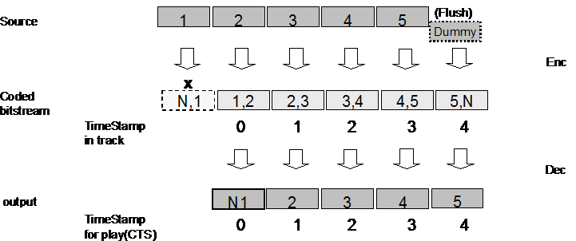
Figure 4 - Example of AAC Access Units
In Figure 5, the enclosed numbers indicate which input blocks are used for prediction and encoding in an encoded frame; for example, [1,2] indicates that block 2 is predicted from frame 1. The source block labelled “Dummy” is audio or silence encoded to output block 5, but is not included in the coded stream in the Track. The letter N indicates encoded silence in the last frame. The last audio frame MAY contain silence if the audio source ends prior to the frame boundary.
The audio stream SHOULD contain DRC and loudness metadata according to [AAC]. The audio encoder SHOULD set the Program Reference Level to the loudness level of the audio stream. The audio decoder SHALL use the Program Reference Level, if available, to achieve a desired target loudness, if applicable. The audio encoder SHOULD generate DRC metadata for light compression encoded in the dyn_rng_ctl and dyn_rng_sgn fields of dynamic_range_info() in the FIL element and DRC metadata for heavy compression in the compression_value field of MPEG4_ancillary_data() in the DSE (data stream element). The audio decoder SHALL apply the DRC metadata, if present, according to [AAC] Amendment 4 including the DRC Presentation Mode value of the drc_presentation_mode field.
Storage of MPEG-4 AAC LC elementary stream samples within a CMAF Track shall be according to [MP4]. The following additional constraints also apply:
An audio sample shall consist of a single AAC audio access unit.
The parameter values of AudioSampleEntry, DecoderConfigDescriptor, and DecoderSpecificInfo shall be consistent with the configuration of the AAC audio stream.
The syntax and values of the AudioSampleEntry shall conform to MP4AudioSampleEntry (‘mp4a’) as defined in [MP4], and the following fields shall be set as defined:
channelcount = 1 (for mono) or 2 (for stereo)
For MPEG-4 AAC, the (codingnamespecific)Box that extends the MP4AudioSampleEntry is the ESDBox defined in [MP4], which contains an ES_Descriptor.
The syntax and values for ES_Descriptor shall conform to [MPEG4S], and the fields of the ES_Descriptor shall be set to the following specified values. Descriptors other than those specified below shall not be used.
ES_ID = 0
streamDependenceFlag = 0
URL_Flag = 0;
OCRstreamFlag = 0
streamPriority = 0
decConfigDescr = DecoderConfigDescriptor
slConfigDescr = SLConfigDescriptor, predefined type 2
The syntax and values for DecoderConfigDescriptor shall conform to [MPEG4S], and the fields of this descriptor shall be set to the following specified values. In this descriptor, decoderSpecificInfo shall be used, and ProfileLevelIndicationIndexDescriptor shall not be used.
objectTypeIndication = 0x40 (Audio)
streamType = 0x05 (Audio Stream)
upStream = 0
decSpecificInfo = AudioSpecificConfig
The syntax and values for AudioSpecificConfig shall conform to [AAC], and the fields of AudioSpecificConfig shall be set to the following specified values:
audioObjectType = 2 (AAC LC)
channelConfiguration = 1 (for single mono) or 2 (for stereo)
GASpecificConfig
Channel assignment shall not be changed within the audio stream within a Track.
The syntax and values for GASpecificConfig shall conform to [AAC], and the fields of GASpecificConfig shall be set to the following specified values:
frameLengthFlag = 0 (1024 lines IMDCT)
dependsOnCoreCoder = 0
extensionFlag = 0
MPEG-4 AAC elementary streams shall conform to the requirements of the MPEG-4 AAC profile at Level 2 as specified in [AAC] with the following restrictions:
Only the MPEG-4 AAC LC object type shall be used.
The elementary stream shall be a Raw Data stream. ADTS and ADIF shall not be used.
The transform length of the IMDCT for AAC shall be 1024 samples for long and 128 for short blocks.
The following parameters shall not change within the elementary stream
Audio Object Type
Sampling Frequency
Channel Configuration
Syntactic elements shall be arranged in the following order for the channel configurations below.
<SCE>, <optional additional elements>, <TERM>… for mono
<CPE>, <optional additional elements>, <TERM>... for stereo
Note: Angled brackets (<>) are delimiters for syntactic elements.
The syntax and values for individual_channel_stream shall conform to [AAC]. The following fields shall be set as defined:
gain_control_data_present = 0
The maximum bitrate of MPEG-4 AAC LC [2-Channel] elementary streams SHALL be calculated in accordance with the AAC buffer requirements as defined in ISO/IEC 14496-3:2009, section 4.5.3. Only the raw data stream SHALL be considered in determining the maximum bitrate (system-layer descriptors are excluded).
Storage of MPEG-4 HE AAC v1 or HE AAC v2 elementary streams within a CMAF Track shall be according to [MP4]. The following constraints also apply.
An audio sample shall consist of a single HE AAC v1 or HE AAC v2 audio access unit.
The parameter values of AudioSampleEntry, DecoderConfigDescriptor, and DecoderSpecificInfo shall be consistent with the configuration of the MPEG-4 HE AAC v1 or HE AAC v2 audio stream.
The syntax and values of the AudioSampleEntry box shall conform to MP4AudioSampleEntry (‘mp4a’) defined in [MP4], and the following fields shall be set as defined:
channelcount = 1 (for HE AAC v2 and mono HE AAC v1) or 2 (for stereo HE AAC v1)
For the core MPEG-4 AAC, the (codingnamespecific)Box that extends the MP4AudioSampleEntry is the ESDBox defined in ISO 14496-14 [14], which contains an ES_Descriptor.
The ESDBox contains an ES_Descriptor.
The syntax and values for ES_Descriptor shall conform to [MPEG4S], and the fields of the ES_Descriptor shall be set to the following specified values. Descriptors other than those specified below shall not be used.
ES_ID = 0
streamDependenceFlag = 0
URL_Flag = 0
OCRstreamFlag = 0 (false)
streamPriority = 0
decConfigDescr = DecoderConfigDescriptor
slConfigDescr = SLConfigDescriptor, predefined type 2
The syntax and values for DecoderConfigDescriptor shall conform to [MPEG4S], and the fields of this descriptor shall be set to the following specified values. In this descriptor, DecoderSpecificInfo shall be used, and ProfileLevelIndicationIndexDescriptor shall not be used.
objectTypeIndication = 0x40 (Audio)
streamType = 0x05 (Audio Stream)
upStream = 0
decSpecificInfo = AudioSpecificConfig
The syntax and values for AudioSpecificConfig shall conform to [AAC] and the fields of AudioSpecificConfig shall be set to the following specified values:
audioObjectType = 2 (AAC LC)
channelConfiguration = 1 (for HE AAC v2 or mono HE AAC v1) or 2 (for stereo HE AAC v1)
GASpecificConfig
extensionAudioObjectType = 5 (SBR) or 29 (PS)
This configuration uses explicit hierarchical signaling to indicate the use of the SBR coding tool, and the PS coding tool.
The syntax and values for GASpecificConfig shall conform to [AAC], and the fields of GASpecificConfig shall be set to the following specified values.
frameLengthFlag = 0 (1024 IMDCT lines)
dependsOnCoreCoder = 0
extensionFlag = 0
Note: MPEG-4 HE AAC v2 is a superset of MPEG-4 AAC LC and MPEG-4 HE AAC v1.
The MPEG-4 HE AAC v1 and HE AAC v2 elementary stream as defined in [AAC] shall conform to the requirements of MPEG-4 HE AAC v1 at Level 2 and MPEG-4 HE AAC v2 at Level 2, respectively, except as follows:
The elementary stream may be encoded according to the MPEG-4 AAC LC, HE AAC v1 or HE AAC v2. Use of the MPEG-4 HE AAC v2 is recommended for 32 kbps or lower.
When using HE-AACv1 and HE-AACv2 bitstreams, explicit backwards compatible signaling SHALL be used to indicate the use of the SBR and PS coding tools. CMAF Segments containing HE-AAC SHALL start with a type 1 SAP, notably, the SBR configuration information SHALL be in the first packet.
The audio shall be encoded in mono, parametric stereo or 2-channel stereo. (Mono only if the source content is recorded in mono.)
The IMDCT size for AAC shall be 1024 lines for long and 128 lines for short blocks.
The elementary stream shall be a Raw Data stream. ADTS and ADIF shall not be used.
The following parameters shall not change within the elementary stream:
Audio Object Type
Sampling Frequency
Channel Configuration
The syntax and values for syntactic elements shall conform to [AAC]. The following elements shall not be present in an MPEG-4 HE AAC v1 or HE AAC v2 elementary stream:
coupling_channel_element (CCE)
program_config_element (PCE).
Syntactic elements shall be arranged in the following order for the channel configurations below.
<SCE><optional additional elements><TERM>… for HE AAC v2 and mono HE AAC v1
<CPE><optional additional elements><TERM>... for stereo HE AAC v1
The maximum bitrate of MPEG-4 HE AAC v1 or HE AAC v2 elementary streams in a CMAF SHALL be calculated in accordance with the AAC buffer requirements as defined in [AAC] section 4.5.3. Only the raw data stream SHALL be considered in determining the maximum bitrate (system-layer descriptors are excluded).
CMAF supports the following formats for carrying subtitles and captions:
WebVTT
TTML
CEA-608
CEA-708
The term “subtitles” in this document is used to mean a visual presentation of text that is synchronized with video and audio tracks, inclusive of “closed captions”. Subtitles are presented for various purposes such as dialog language translation, localized titles, content description, and descriptive captions for hearing impaired viewers or presentation situations where audio is unavailable or inappropriate.
Closed captions used in broadcast video signals are also supported. In North America, closed captions, containing subtitles intended primarily for the hearing impaired viewers, are commonly delivered in one of two formats: CEA-608 and CEA-708. See Embedded Captions.
WebVTT is a subtitle format that is commonly used to render subtitles in web browsers [VTT]. It can also be used to render subtitles in other types of media presentation applications.
In CMAF, WebVTT documents are encapsulated in CMAF Media Segments contained in a CMAF Track. WebVTT Segments may be sequentially downloaded, synchronized, and presented the same as audio and video CMAF Segments. A WebVTT document can be contained in a single Segment that spans the entire duration of a prerecorded Presentation, or span Segments with durations similar to audio and video, which is necessary in the case of low latency live streaming. The encapsulation of WebVTT documents in ISO Base Media movie fragments and tracks is defined in MPEG-4 Part 30 [ISOTXT].
WebVTT subtitle tracks are defined using a track handler_type of ‘text’ with a codingname of ‘wvtt’. WebVTT subtitle tracks store samples corresponding to zero or more simultaneously presented WebVTT cues in movie fragments and CMAF Segments that span variable durations on the Track timeline. WebVTT subtitle tracks synchronize with other tracks selected for presentation using regular CMAF track synchronization methods based on ISO Base Media File Format and a Presentation Description Manifest. Any WebVTT cue that crosses a CMAF Segment boundary (i.e. which starts before the Segment starts and/or ends after the Segment ends) SHALL be present in that Segment, and SHALL indicate the entire time range of the cue, even when it lies outside of the Segment boundary.
Note: Forced titles are supported in TTML/IMSC1, but not VTT. A workaround is to create two VTT Tracks, one with only the forced titles, and the other with both forced and regular subtitles. A player must play the forced-only track by default, and switch to the forced + subtitles track when subtitles are selected.
TTML is a subtitle format that is used to author and deliver subtitles for television, movies, etc. The Timed Text Markup Language was specified by W3C, then adapted to the authoring and presentation of video synchronized subtitles in multiple production and delivery specifications. W3C has specified an Internet Media Subtitle and Caption profile version 1 [IMSC]that is compatible with these delivery specifications. IMSC1 can store subtitles as text with style and layout information, or as images. CMAF Tracks conforming to ISO/IEC 14496-30 [ISOTXT] and W3C Internet Media Subtitles and Caption profile [IMSC] MAY be used in addition to WebVTT.
TTML subtitle tracks as specified in ISO/IEC 14496-30, use a track handler_type of ‘subt’, a Subtitle Media Header Box (‘sthd’), and the XMLSubtitleSampleEntry format.
The XMLSubtitleSampleEntry namespace field is set to at least one unique namespace. It SHOULD indicate the primary IMSC1 namespace of the document, and SHOULD list all namespaces in use in the document (e.g. IMSC1 + SMPTE-TT).
The schema_location field should be set to schema pathnames that uniquely identify the profile or constraint set of the namespaces included in the namespace field, e.g. https://www.w3.org/TR/2016/CR-ttml-imsc1-20160128/xml-schemas/imsc1.xsd
When image sub-samples are present, then the auxiliary_mime_types field SHALL be set to the mime types used in the sub-samples – e.g. “image/png”.
CEA-608 and CEA-708 are formats developed for delivering closed captions for accessibility purposes for broadcast television in North America. These formats can also be used to deliver captions in other scenarios. Closed captions can be embedded in the video elementary stream’s SEI messages. Please refer to section 9.6 for the format of CEA-608/708 in SEI Messages.
Text tracks SHOULD normally be labeled with their Role. See section [7.5.5]
Subtitles can be authored in a variety of formats, including many that are not supported by CMAF. To be CMAF compliant it will be necessary to convert subtitles into one of the formats supported by CMAF.
The mandatory subtitle format is VTT in the profiles defined in Annex A. ; other formats, including TTML and SEI messages, may also be offered. The Timed Text Working Group of the W3C has provided a Note on how to map subtitles between the TTML and WebVTT formats. The note can be found here: https://dvcs.w3.org/hg/ttml/raw-file/tip/ttml-webvtt-mapping/mappingbetweenTTMLandWebVTTW3C.html .
CMAF Presentation Profile ID CMFHD
If containing video, SHALL include at least one Switching Set constrained to the ‘cfhd’ Media Profile in A.2
If containing audio, SHALL include at least one audio Switching Set constrained to the ‘caac’ Media Profile in A.3Table 3 – AAC Core audio formats.
If containing subtitles, SHALL include a Switching Set for each language and role provided in subtitles constrained to the ‘cwvt’ Media Profile in A.4.
It is recommended that each Track Switching Set include Tracks conforming to one Track Profile so that a Player compatible with that profile can automatically switch between all Tracks once a Switching Set is selected by a Player. A Track Switching Set that combines multiple Media Profiles requires additional logic to determine if it can switch up to a higher Media Profile during adaptive streaming, while switching down is usually possible. Switching Sets of different Profiles often also differ regarding the need for different encryption keys, DRM licenses, output permissions, and authorization, e.g. different purchase or subscription rights associated with each Video Profile.
Switching Set Media Profiles, encoding parameters, encryption, and licensing SHALL be constrained so that a single license acquisition and decoder/display system initialization is sufficient to present all the Tracks in the Switching Set. For instance, SD content may be available over analog display connections, HD may require HDMI, and UHD may require HDCP 2.2 over HDMI to reach an external display. These output controls are expressed in DRM licenses and enforced by DRM systems probably not exposed to the playback application, so they SHALL be constrained by content authoring to result in automatic seamless switching behavior.
It is strongly recommended, that encryption keys not be shared between audio and video Switching Sets. Audio decoding and decryption systems may have lower key security than video decoding systems so should not expose a key also used for video. Premium UHD/HDR content may require hardware security, watermarking, etc. only available on some devices and DRMs.
The following Video Profiles are interoperability points between encoders and decoders that use the video Track format and tools specified above. Profiles SHOULD be indicated by the presence of the indicated brand in the compatible brands table of the File Type box.
Tracks indicating a Profile SHALL not exceed the limits specified in Table 5 - Video Media Profiles. Players SHOULD equal or exceed the limits of a Profile in order to reliably decode it.
Track Profiles SHOULD be indicated in a Manifest so that Players can identify the maximum decoding requirements of each Track and select a compatible Track with appropriate encoding quality for the Player’s available bandwidth, display capabilities, etc. Switching Sets in Manifests SHOULD indicate the highest Profile of the included Tracks. A Player MAY also initialize and play a subset of Tracks in a Switching Set using per Track Profiles and parameters, and ignore other Tracks in the Switching Set that exceed its decoding capabilities.
The following table lists the maximum encoding parameters and minimum decoding parameters necessary for interoperability. Profiles are generally inclusive of lower codec profiles and levels, and can encode video less than the maximum height and width, and SHALL the size of other picture aspect ratios to the constraining dimension. For example, movies that are typically produced in aspect rations ranging from 1.85 to 2.4 will be width limited and will therefore have to encode fewer lines if encoding with square sample aspect ratio, e.g. 1920x800 in HD frame limits. Note that a smaller frame size allows a higher frame rate, determined by the fill rate of the level.
For example, the HD video Media Profile allows 1280x720 size at 60Hz, even though it is limited to 30Hz at 1920x1080 size, and the SD Profile allows 854x480 at 60Hz. See Annex D. for detailed examples.
Table 5 - Video Media Profiles
| Media Profile | Codec | Profile | Level | Bitrate Mbps |
Frame Sz Samples | Fillrate Samples/s | Color Coding | EOTF | Max Height Samples | Max Width Samples | Max Fr Rate @maxSize |
File Brand |
|---|---|---|---|---|---|---|---|---|---|---|---|---|
| SD | AVC | High | 3.1 | 10 | 921 600 | 27 648 000 | BT-709 or 601 | BT-1886 | 576 | 854 | 56.2 | ‘cfsd’ |
| HD | AVC | High | 4.0 | 25 | 2 097 152 | 62 914 560 | BT-709 | BT-1886 | 1080 | 1920 | 30.1 | ‘cfhd’ |
| HDHF | AVC | High | 4.2 | 62 | 2 228 224 | 133 693 440 | BT 709 | BT 1886 | 1080 | 1920 | 64 | ‘chdf’ |
| HHD8 | HEVC | Main | 4.1 | 20 | 2 228 224 | 133 693 440 | BT-709 | BT-1886 | 1080 | 1920 | 64.0 | ‘chhd’ |
| HHD10 | HEVC | Main10 | 4.1 | 20 | 2 228 224 | 133 693 440 | BT-709 | BT-1886 | 1080 | 1920 | 64.0 | ‘chh1’ |
| UHD8 | HEVC | Main8 MainTier | 5.0 | 25 | 8 912 896 | 267 386 880 | BT-709 | BT-1886 | 2160 | 3840 | 32 | ‘cud8’ |
| UHD10 | HEVC | Main10 MainTier 10-bit | 5.1 | 40 | 8 912 896 | 534 773 760 | BT-709, 2020 | BT-1886 | 2160 | 3840 | 64 | ‘cud1’ |
| HDR10 | HEVC | Main10 MainTier 10-bit | 5.1 | 40 | 8 912 896 | 534 773 760 | BT-2020 | ST-2084 | 2160 | 3840 | 64 | ‘chr1’ |
CMAF specifies a Required audio profile, AAC Core, to provide a minimum level of interoperability between CMAF Presentations and Players. Every audio CMAF Selection Set SHALL include at least one AAC Core audio CMAF Track. As detailed in Table 6, this audio track SHALL be stereo or mono. Audio Tracks containing other codecs and channel configurations MAY be included in Selection Sets.
Table 6 - Audio Track Profiles
| Media Profile | Codec and Profile | Number of channels | Max Sampling Rate | File Brand |
|---|---|---|---|---|
| AAC Core | AAC-LC, HE-AAC v1 or HE-AAC v2 | Mono or Stereo | 48 kHz | ‘caac’ |
See Section 10 for more restrictions on audio tracks.
CMAF specifies a required subtitle profile, WebVTT Core, to provide a minimum level of interoperability between CMAF Presentations and Players.
Table 7 - Subtitle Track Profiles
| Media Profile | Format | Notes | File Brand |
|---|---|---|---|
| WebVTT Core | WebVTT, Version 1.0 | — | ‘cwvt’ |
| TTML IMSC1 | TTML W3C IMSC Version 1 | — | ‘ctti’ |
| CEA | CEA-608 and CEA-708 | Caption data is embedded in SEI messages in video track; multiple closed caption streams may be present | ‘ccea’ |
See also Section 11 for more details of these subtitle formats.
CMAF Presentation Profiles require each Presentation to include required audio, video, and subtitle Tracks conforming to CMAF specified Media Profiles (when the content type is present), but do not prohibit additional Tracks. Additional codecs and sample descriptions can be contained in the CMAF container format using standard ISOBMFF extension mechanisms.
Each sample description registered for use in ISOBMFF is listed by the four-character code of its sample entry at http://mp4ra.org, and links to a specification defining the sample and track format. CMAF Compatible Media Profiles and Track bindings MAY be specified and registered in the form of a brand in the MP4RA registry that links to a CMAF Compatible Media Profile specification.
CMAF constraints on audio and video Tracks SHALL apply to CMAF Compatible Track Media Profiles and Track bidings, including sample containment and timing in Fragments, sequencing of Fragments within Tracks, time alignment of Fragments between tracks in the same Switching Sets, synchronization with other Tracks in a Presentation, application of Common Encryption to samples, value of the “codecs” media type parameter, etc. The track specification linked to each Media Profile brand SHOULD specify what parameter changes are allowed between Fragments in a Track, and alternative Fragments in a Switching Set in order to enable seamless switching and decoding.
Tracks not compatible with a CMAF Media Profile (e.g. using an alternative codec) SHALL NOT carry a CMAF Media Profile brand, but MAY carry the 'cmfc' container format brand if they comply with the restrictions of that brand as documented in Section 7.2.
Spatial and temporal subsampling are encoding methods commonly used to adaptively reduce bitrate during adaptive streaming while optimizing video quality.
Spatial subsampling encodes a fraction of the samples in the source video, e.g. 50% of the source’s cropped vertical and horizontal sample count. See Section C.2.
Temporal subsampling encodes a fraction of the frames in the source video, e.g. 50% of 24Hz to result in a 12Hz Track with half the samples, each of twice the duration, but the same CMAF Segment durations and start times. A Switching Set can include Tracks at different framerates, e.g. 15Hz and 30Hz (and perhaps 60Hz and 120Hz for UHD), but only if they are all exact submultiples of the lowest framerate.
In order for Track Switching Sets to be presented to viewers with minimal visible disturbance during adaptive bitrate switching, encoding and playback of all the alternative Tracks should adhere to the following best practices:
Tracks in a Switching Set SHALL be alternative encodings of the same source content (same active video area, color encoding, source spatial sampling, etc.).
All subsamples are exact sub-multiples of the number of spatial samples in the active area of the source video, i.e. no fractional or rounded subsamples after subsampling and possibly decoder cropping of partially empty macroblocks.
The Player SHALL determine the display aperture i.e. the number of vertical and horizontal pixels rendered. A player may select a display aperture based on the picture aspect ratio of the Tracks in a Switching Set (‘tkhd’ width/height), available display shapes and sizes, or output signal formats (such as HDMI EDIDs), as well as application and user preferences in framing the source aspect ratio within the application determined display area (full screen, windowed, letterboxed, portrait or landscape device orientation, etc.). Precise subsampling and rescaling is specified in this Annex to avoid visible changes in image size, position, or shape between alternative Tracks and Segments in a Switching Set. Also, different Switching Sets within a Selection Set SHOULD maintain exactly the same aspect ratio to prevent visible distortion when selecting e.g. different camera angles.
Players SHALL scale the decoded and cropped samples in all Tracks in a Switching Set to the same display aperture.
Players SHALL display all Tracks in a Switching Set at the same refresh rate. The Player SHALL determine a display refresh rate for the Switching Set and maintain that by refreshing each decoded image multiple times if necessary. Note: Framerate changes are impractical for many video interfaces to smoothly handle, and they may lack operating points for low framerates.
Spatial sub-sampling can be a helpful tool for improving coding efficiency of a video elementary stream. It is achieved by reducing the resolution of the coded picture relative to the source picture, while adjusting the sample aspect ratio if necessary to compensate for any change in the width to height sample ratio. For example, by reducing the horizontal resolution of the coded picture by 50% while increasing the sample aspect ratio from 1:1 to 2:1, the coded picture size is reduced by half. While this does not necessarily correspond to a 50% decrease in the amount of coded picture data, the decrease can nonetheless be significant.
The width and height in active image spatial samples in a Coded Video Sequence is specified by the combination of the following sequence parameter set fields in the video elementary stream or sample entry:
[AVC]:
pic_width_in_mbs_minus1 which defines the number of horizontal samples
pic_height_in_map_units_minus1, which defines the number of vertical samples
aspect_ratio_idc, which defines the aspect ratio of each sample
frame_crop_left_offset, cropping parameter in SPS
frame_crop_right_offset, cropping parameter in SPS
frame_crop_top_offset, cropping parameter in SPS
frame_crop_bottom_offset, cropping parameter in SPS
[HEVC]:
pic_width_in_luma_samples which defines the number of horizontal samples
pic_height_in_luma_samples which defines the number of vertical samples
aspect_ratio_idc, which defines the aspect ratio of each sample
conf_win_left_offset, cropping parameter in SPS
conf_win_right_offset, cropping parameter in SPS
conf_win_top_offset, cropping parameter in SPS
conf_win_bottom_offset cropping parameter in SPS
The presentation size in the video track header box (‘tkhd’) is defined in terms of square pixels (i.e. 1:1 sample aspect ratio) in the width and height fields of the Track Header Box (‘tkhd’) of the video track. These values are used to determine the appropriate aspect ratio when displaying a Track. The width and height in the sample entry is the cropped sample count, which can be converted to square pixels by multiplying by the ratio indexed by aspect_ratio_idc.
All Tracks in a Track Switching Set SHALL have the same picture aspect ratio, equal to that of the active image area of the source. A Player may ignore the presentation size indicated in each Track, and scale all Segments to the Player-determined presentation aperture for that Switching Set.
The original picture aspect ratio is conveyed in NAL-structured video by the sample aspect ratio of the source video as well as the cropped horizontal and vertical sample counts (SAR is the enumerated sample width to height ratio indexed by the SPS VUI parameter, aspect_ratio_idc). The picture aspect ratio is the cropped width divided by the cropped height times the SAR ratio.
Subsampling may change the encoded video sample aspect ratio when it changes the encoded sample counts, and must be accurately encoded in the VUI information in Sequence Parameter Sets in each Fragment of every Track. MPEG decoder models include an undefined display processor that uses SPS NAL and VUI information to convert decoded 4:2:0 numerical values to a scaled image with the SAR, transfer function and color space indicated in VUI. This Annex further defines how multiple Tracks in a Track Set are scaled to a common display aperture with a fixed picture aspect ratio. The SAR and cropped sample counts SHALL produce the same picture aspect ratio as the source video.
The extent of sub-sampling applied to a Track can be characterized by a sub-sample factor in each of the horizontal and vertical dimensions, defined as follows:
The horizontal sub-sample factor is defined as the ratio of the number of columns of the luma sample array in the source frame after sample cropping has been applied, divided by the number of columns of the luma sample array after sample cropping has been applied in subsampled Track. For example, a 1920 wide source image subsampled to 960 horizontal samples in a subsampled Track would have a horizontal sub-sample factor of 0.5
The vertical sub-sample factor is defined as the ratio of the number of rows of the luma sample array in the source frame after sample cropping has been applied, divided by the number of rows of the luma sample array after sample cropping has been applied in a subsampled Track. For example, 1088 vertical samples cropped to 1080 in the source, subsampled to 544 samples cropped to 540 in a subsampled Track would have a vertical sub-sample factor of 0.5.
If a 1920 x 1080 square pixel (SAR 1:1) source picture is horizontally sub-sampled and encoded at a resolution of 1440 x 1080 (SAR 4:3), which corresponds to a 1920 x 1080 square pixel (SAR 1:1) picture, then the horizontal sub-sample factor is 1440 ÷ 1920 = 0.75, while the vertical sub-sample factor is 1.0 since there is no change in the vertical dimension.
Similarly, if a 1280 x 720 (SAR 1:1) source picture is vertically sub-sampled and encoded at a resolution of 1280 x 540 (SAR 3:4), which corresponds to a 1280 x 720 (SAR 1:1) picture size, then the horizontal sub-sample factor is 1.0 since the is no change in the horizontal dimension, and the vertical sub-sample factor is 540 ÷ 720 = 0.75.
If a 1280 x 1080 (SAR 3:2) source picture is vertically sub-sampled and encoded at a resolution of 1280 x 540 (SAR 3:4), corresponding to a 1920 x 1080 square pixel (SAR 1:1) picture size, then the horizontal sub-sample factor is 1280 ÷ 1920 = 2/3, and the vertical sub-sample factor is 540 ÷ 1080 = 0.5. To understand how this is an example of mixed sub-sampling, it is helpful to remember that the initial source picture resolution of 1280 x 1080 (SAR 3:2) can itself be thought of as having been horizontally sub-sampled from a higher resolution picture.
CMAF players typically control adaptation of the source image to whatever display environment is currently in use. Source content like movies, old TV, and videos from cellphones, etc. have a variety of picture aspect ratios, as do video devices that include phones, tablets, computers, TVs, projectors, and wall displays. In some cases, display aspect ratios will change dynamically when a device like a tablet is rotated from vertical to horizontal orientation, or video is directed to a different display, and the video aperture may be switched from full screen to a window at any time. A Player conforming to the CMAF Application model SHALL adapt the source Active Image size and shape to its display environment by methods such as scaling, padding, cropping and stretching, and apply the same adaptation to every CMAF Segment in a Switching Set, adjusted for subsampling. Image padding added during production to adapt images to a particular TV aspect ratio like 4:3 or 16:9 (i.e. letter box bars or pillar box bars) SHOULD not be encoded.
Since the sub-sampled picture area might not always fall exactly on the sample coding unit boundary employed by the video elementary stream, additional cropping parameters are used to further define the dimensions of the coded picture. It is a normative requirement of AVC and HEVC that decoders perform cropping as signaled in Sequence Parameter Sets (SPS NALs).
[H264]:
“Macroblocks” define the sample coding unit boundary (and are 16x16 blocks)
[H265]:
“Coding Tree Units” define the sample coding unit boundary (and are 64×64, 32×32, or 16×16 blocks). See section C.2.
When spatial sub-sampling is applied, additional cropping parameters are often needed to compensate for the mismatch between the coded picture size and the macroblock ([H264]) / coding tree unit ([H265]) boundaries. The specific relationship between theses mechanisms is defined as follows:
Each picture is decoded using the coding parameters, including horizontal and vertical sample counts and cropping fields, defined in the sequence parameter set corresponding to that picture’s Coded Video Sequence.
The display aperture is determined by the CMAF Player, and each Segment scaled to fill that aperture using the same method to maintain registration, e.g. common sides, common top bottom, exact match, etc. For example, to output the video to an HDTV, the decoded image might need to be scaled to the display aperture width, then additional letterbox matting applied in order to match a valid HDMI television input format. A newer TV or projector might accept this picture aspect ratio directly without padding.
The following example shows a typical movie picture aspect ratio that was padded and encoded with letterbox bars to fit a 16:9 TV display. The active image is extracted, subsampled, encoded, and partially filled macroblocks indicated by cropping parameters. AVC and HEVC parameters for the example are detailed in the figure that follows.
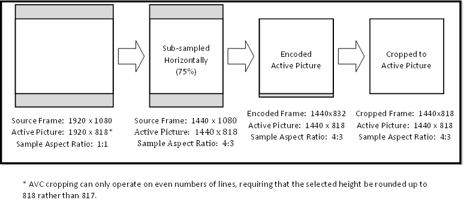
Figure 5 - Example of encoding process of letterboxed source content
Figure 5 shows an example of the encoding process that can be applied. Table 8 shows the parameter values that could be used.
Table 8 – Example sub-sample and cropping values for Figure 5
| Object | Field | Value |
|---|---|---|
| Picture Format | width | 1920 |
| Frame Size | height | 1080 |
| Sub-sample Factor | horizontal | 0.75 |
| vertical | 1.0 | |
| Track Header Box | width | 1920 |
| height | 818 | |
| [H264] Parameter Values | chroma_format_idc | 1 (4:2:0) |
| aspect_ratio_idc | 14 (4:3) | |
| pic_width_in_mbs_minus1 | 89 | |
| pic_height_in_map_units_minus1 | 51 | |
| frame_cropping_flag | 1 | |
| frame_crop_left_offset | 0 | |
| frame_crop_right_offset | 0 | |
| frame_crop_top_offset | 0 | |
| frame_crop_bottom_offset | 7 | |
| [H265] Parameter Values | chroma_format_idc | 1 (4:2:0) |
| MinCbSizeY | 16 | |
| log2_min_luma_coding_block_size_minus3 | 1 | |
| aspect_ratio_idc | 14 (4:3) | |
| pic_width_in_luma_samples | 1440 | |
| pic_height_in_luma_samples | 832 | |
| conformance_window_flag | 1 | |
| conf_win_left_offset | 0 | |
| conf_win_right_offset | 0 | |
| conf_win_top_offset | 0 | |
| conf_win_bottom_offset | 7 |
Note 1: as chroma_format_idc is 1, SubWidthC and SubWidthC are set to 2 per [H264] and [H265]. This results in a doubling of frame crop parameters (so frame_crop_bottom_offset and conf_win_bottom_offset both equate to 14 pixels in the above example).
Note 2: As [H265] MinCbSizeY is 16 and log2_min_luma_coding_block_size_minus3 is 1, the Coding Tree Unit size is 16x16 (matching the [H264] macroblock size of 16x16).
The decoding and display process for this content is illustrated in Figure 6, below. In this example, the decoded picture dimensions are 1440 x 818, one line larger than the original active picture area. This is due to a limitation in the cropping parameters to crop only even pairs of lines. Note: 816 lines or 51 macroblocks might be more practical, but makes a less informative example.
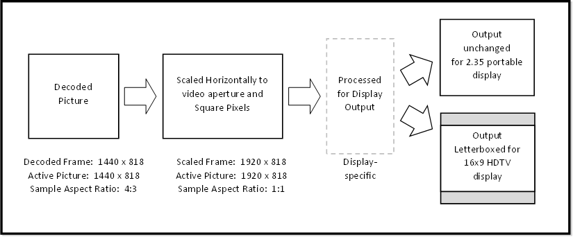
Figure 6 – Example of display process for letterboxed source content
Figure 7, below, illustrates what might happen when both sub-sampling and cropping are working in the same horizontal dimension. The original source picture content is first sub-sampled horizontally from a 1:1 sample aspect ratio at 1920 x 1080 to a sample aspect ratio of 4:3 at 1440 x 1080, then the 1080 x 1080-pixel active picture area of the sub-sampled image is encoded. However, the actual coded samples have a size of 1088 x 1088 samples due to the coding unit boundaries falling on even multiples of 16 pixels in this example - therefore, additional cropping parameters are provided in both horizontal and vertical dimensions.
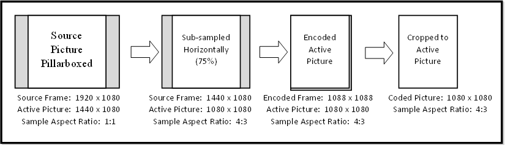
Figure 7 - Example of encoding process for pillarboxed source content
Table 9 lists the various parameters that might appear in the resulting file for this sample content.
Table 9 – Example sub-sample and cropping values for Figure 7
| Object | Field | Value |
|---|---|---|
| Picture Format | width | 1920 |
| Frame Size | height | 1080 |
| Sub-sample Factor | horizontal | 0.75 |
| vertical | 1.0 | |
| Track Header Box | width | 1440 |
| height | 1080 | |
| [H264] Parameter Values | chroma_format_idc | 1 (4:2:0) |
| aspect_ratio_idc | 14 (4:3) | |
| pic_width_in_mbs_minus1 | 67 | |
| pic_height_in_map_units_minus1 | 67 | |
| frame_cropping_flag | 1 | |
| frame_crop_left_offset | 0 | |
| frame_crop_right_offset | 4 | |
| frame_crop_top_offset | 0 | |
| frame_crop_bottom_offset | 4 | |
| [H265] Parameter Values | chroma_format_idc | 1 (4:2:0) |
| MinCbSizeY | 16 | |
| log2_min_luma_coding_block_size_minus3 | 1 | |
| aspect_ratio_idc | 14 (4:3) | |
| pic_width_in_luma_samples | 1088 | |
| pic_height_in_luma_samples | 1088 | |
| conformance_window_flag | 1 | |
| conf_win_left_offset | 0 | |
| conf_win_right_offset | 4 | |
| conf_win_top_offset | 0 | |
| conf_win_bottom_offset | 4 |
Note 1: as chroma_format_idc is 1, SubWidthC and SubWidthC are set to 2 per [H264] and [H265]. This results in a doubling of frame crop parameters (so frame_crop_bottom_offset and conf_win_bottom_offset both equate to 14 pixels in the above example).
Note 2: As [H265] MinCbSizeY is 16 and log2_min_luma_coding_block_size_minus3 is 1, the Coding Tree Unit size is 16x16 (matching the [H264] macroblock size of 16x16).
The process for reconstructing the video for display is shown in Figure 8. As in the previous example, the decoded picture is required to be scaled back up to the original 1:1 sample aspect ratio.
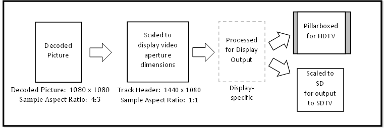
Figure 8 – example of display process for pillarboxed source content
If this content was to be displayed on a 4:3 television or other 4:3 display, no further processing of the image would be necessary. However, if this content was to be displayed on a 16:9 HDTV, it might be necessary for it to apply additional matting on the left and right sides to reconstruct the original pillarboxes in order to ensure the video image displays properly. Or, a user might elect to zoom the image to full width and crop the top and bottom. Standard procedure for most TV programs shot on 1.85 aspect ratio film is to “protect” the 1.78 aspect ratio area (16:9) so that the top and bottom can be cropped when displayed full width on HDTVs without loss of significant content.
Example encoding “ladders” for adaptive bitrate and resolution Track Switching Sets are included in 0.
The examples show worksheets that calculate a series of bitrates and sizes given a maximum desired bitrate and the percentage bitrate change between Tracks, referred to as “gradient”. The number of Tracks calculated is fixed at a large number, but only the necessary number of tracks need be encoded (starting from the top). Additional rows can be ignored.
Scaling and macroblock are calculated and compared to a codec level and profile to calculate frame rate, etc. Horizontal and vertical subsample ratios are checked for integer accuracy after cropping parameters are applied. A figure of merit (bits per picture element) is calculated to help manually adjust subsample ratios against the bitrate to maintain a consistent level of video quality at each bitrate (aside from resolution).
Note that max bitrate, gradient, the number of Tracks, and bit per PEL need to be adjusted to actual source material, deliver strategy, target networks, target devices, encoder efficiency, etc.
Some common source content aspect ratios and frame rates are selected for examples; including 16x9 HD, nearly 16x9 SD, a wide screen movie aspect ratio (2.4), 4x3, and frame sizes for 60Hz.
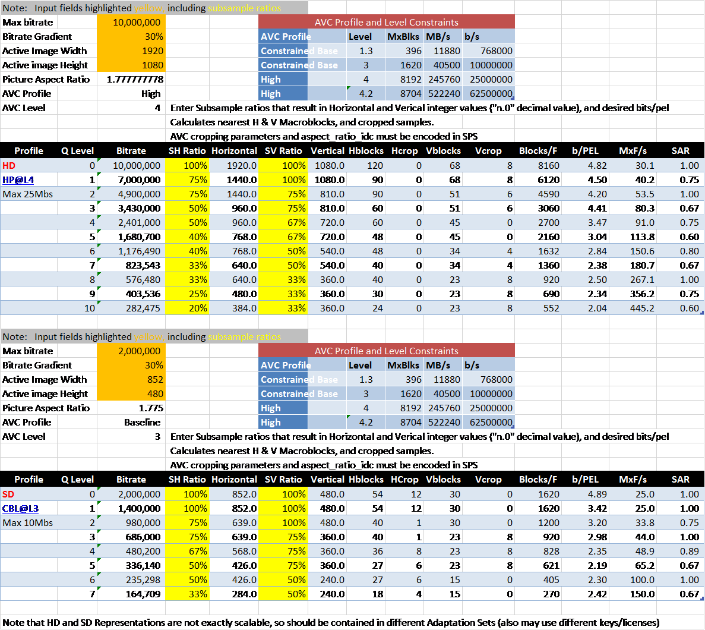
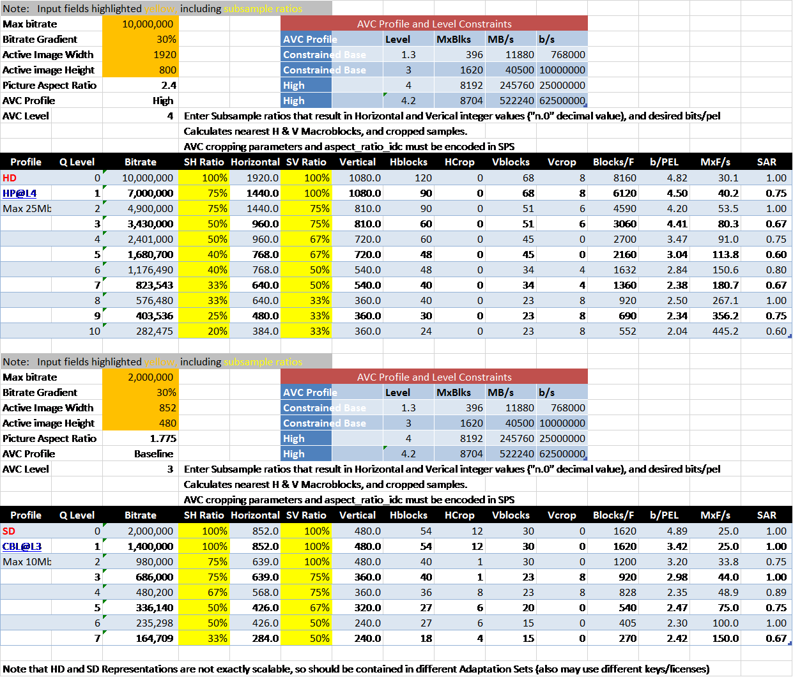
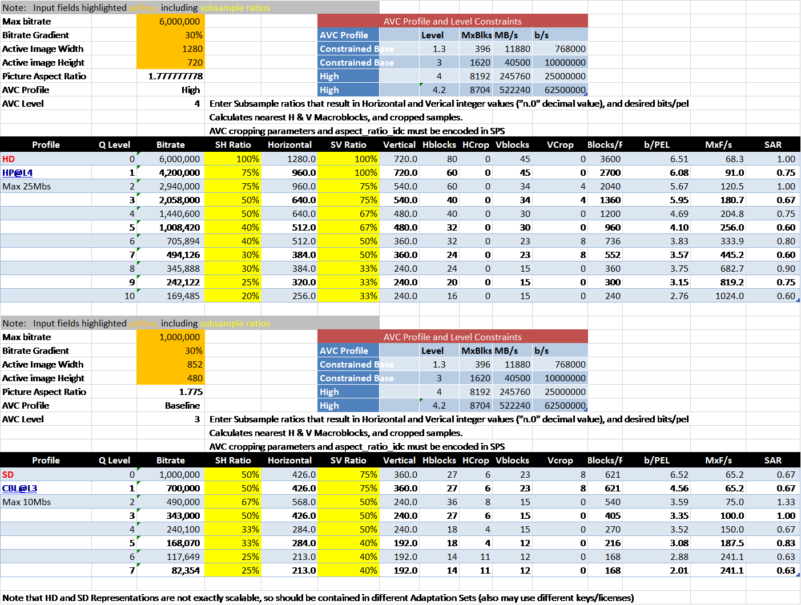